الدليل الشامل لمفاهيم الأموال الذكية (Smart Money Concepts)، والتحليل الأساسي (Fundamental Analysis)، والتحليل الفني (Technical Analysis) — من المبتدئ إلى المحترف
التحليل الثلاثي (THE TRIPLE ANALYSIS)
الدليل الشامل لمفاهيم الأموال الذكية، والتحليل الأساسي، والتحليل الفني
الطبعة الأولى — 2026
جميع الحقوق محفوظة © 2026 لـ Ahmed Abdelhafez وAhmed Abu Omran.
لا يجوز إعادة إنتاج أي جزء من هذا الكتاب أو توزيعه أو نقله بأي شكل من الأشكال أو بأي وسيلة — سواء بالتصوير، أو التسجيل، أو أي وسيلة إلكترونية أو ميكانيكية أخرى، أو عبر أي نظام لتخزين المعلومات واسترجاعها — دون إذن كتابي مسبق من المؤلفَين، باستثناء الاقتباسات القصيرة المستخدمة في المراجعات النقدية وبعض الاستخدامات غير التجارية الأخرى التي يسمح بها قانون حقوق النشر.
يُعد كتاب "التحليل الثلاثي"، وجميع ما يتضمنه من رسوم توضيحية وأشكال ومخططات، عملًا أصليًا أنتجه المؤلفان، ويخضع لحماية قوانين الملكية الفكرية وحقوق النشر المعمول بها. أي إعادة إنتاج أو توزيع غير مصرح به لهذا العمل، أو أي جزء منه، قد يُعرّض صاحبه لعقوبات مدنية وجنائية، وستُتخذ الإجراءات القانونية اللازمة إلى أقصى حد يسمح به القانون.
هذا الكتاب مُعَدّ لأغراض تعليمية وتثقيفية فقط. ينطوي التداول والاستثمار في الأسواق المالية على مخاطر جوهرية لخسارة رأس المال، وقد لا يكون مناسبًا لكل شخص. لا ينبغي اعتبار أي محتوى وارد في هذا الكتاب استشارة مالية أو استثمارية أو قانونية أو ضريبية، ولا توصية أو دعوة لشراء أو بيع أي أداة مالية.
محتوى هذا الكتاب، وجميع الأطر والمفاهيم والقواعد الواردة فيه، مستمدّ من تجربة تداول حقيقية وشخصية خاضها المؤلفان على مدار سنوات، بما فيها من نجاحات وإخفاقات شكّلت فهمهما العملي للأسواق. أما المخططات والأشكال التوضيحية المرسومة داخل هذا الكتاب تحديدًا، فهي رسوم توضيحية أُعدّت خصيصًا لتجسيد وتبسيط تلك المفاهيم بأوضح صورة ممكنة للقارئ، وليست نسخة حرفية عن صفقة أو حساب أو أداة مالية بعينها؛ فأداء الأسواق الفعلي، ماضيًا أو مستقبلًا، لا يتكرر بالشكل نفسه ولا يمكن ضمانه.
لا يقدّم المؤلفان أي إقرار أو ضمان بخصوص دقة أو اكتمال محتوى هذا الكتاب، ويُخليان مسؤوليتهما صراحةً عن أي ضمانات ضمنية. تقع مسؤولية أي قرار تداولي بالكامل على عاتق القارئ. لن يتحمّل المؤلفان أي مسؤولية عن أي خسارة أو ضرر، مالي أو غير مالي، ينشأ بشكل مباشر أو غير مباشر عن استخدام أو تطبيق أي معلومة واردة في هذا الكتاب.
يُنصح القراء بإجراء أبحاثهم الخاصة واستشارة مختص مالي مرخّص قبل اتخاذ أي قرار استثماري أو تداولي.
عنوان الكتاب: التحليل الثلاثي
المؤلفان: Ahmed Abdelhafez، Ahmed Abu Omran
الطبعة: الأولى، 2026
اللغة: العربية (مع بعض المصطلحات الإنجليزية المتخصصة)
وُلد هذا الكتاب بعد رحلة طويلة — سنوات قضيناها بين المخططات، وبين صفقاتنا الخاسرة بقدر ما بين رابحاتها، وفي ذلك المسار البطيء، والمُحبِط أحيانًا، الذي حوّل خبرة متناثرة إلى شيء يمكن تعليمه فعلًا لغيرنا.
لم نكتب هذا الكتاب بحثًا عن اختصارات سهلة. ما بين يديك أقرب إلى سجلٍّ عملي: الأطر التي عدنا إليها مرارًا، والأخطاء التي كلّفتنا قبل أن تُعلّمنا شيئًا، والتنقيح البطيء لمنهج استقرّ أخيرًا تحت ضغط ظروف السوق الحقيقية. إن درست هذا الكتاب بجدّية وطبّقته بصبر، فسيمنحك أساسًا حقيقيًا — أساسًا بُني ليدوم طويلًا، لا ليخدم صفقتك القادمة فقط.
لكننا نريد أن نكون صادقَين معك قبل أن تقلب الصفحة التالية: لا شيء مما ستقرأه — لا هيكل السوق، ولا مفاهيم الأموال الذكية، ولا المؤشرات — هو الدرس الحقيقي. الدرس الحقيقي أهدأ من كل ذلك بكثير. إنه الهدوء. إنه الانضباط. إنه القدرة على الجلوس مع صفقة خاسرة دون أن تدعها تُملي عليك قرارك التالي.
ستمر بفترات تشعر فيها أن استراتيجيتك لا تُقهر، حين يبدو كل إعداد صحيحًا وكل حدس مصيبًا. لا تخلط بين ذلك وبين الاحتراف الحقيقي. فبدون إدارة مخاطر وانضباط نفسي خلف أي ميزة تداولية، لن تصمد هذه الميزة أمام عدد كافٍ من الصفقات. رأينا ذلك يحدث لغيرنا، ورأيناه يحدث لنا في بدايات مشوارنا أيضًا.
لذا خذ الأطر الواردة في هذا الكتاب على محمل الجد — فهي تعمل فعلًا، وقد بنيناها لتدوم. لكن خذ الانضباط على محمل جدٍّ أكبر. فالاحتراف الحقيقي في هذا المجال لا يبدأ بالسيطرة على السوق، بل يبدأ بالسيطرة على النفس.
"التحليل الثلاثي" ليس مجرد كتاب آخر عن التداول، بل مرجع شامل يدمج ثلاث مدارس فكرية رئيسية في عالم الأسواق المالية ضمن إطار واحد متماسك:
على مدى سنوات من التداول والتعليم، يلاحظ المرء بوضوح أن معظم المتداولين يركزون على نوع واحد فقط من التحليل:
هذا الكتاب يهدف إلى سد هذه الفجوة، من خلال تقديم الأدوات الثلاث بشكل متدرج، تعليمي، وقابل للتطبيق الفوري.
تم تصميم هذا الكتاب ليخدم ثلاثة أغراض:
نصائح للاستخدام الأمثل:
تقوم فلسفة هذا الكتاب على مبدأ بسيط:
الأسواق المالية مدفوعة بعوامل متعددة ومتداخلة، والنجاح المستدام في التداول يأتي من فهم هذه العوامل مجتمعة، لا من إتقان أداة واحدة فقط.
يمكن تلخيص دور كل نوع من أنواع التحليل الثلاثة في جملة واحدة:
| نوع التحليل | السؤال الذي يُجيب عنه |
|---|---|
| التحليل الأساسي | ماذا يجب أن يحدث في السوق، بناءً على الظروف الاقتصادية والمالية الكلية |
| مفاهيم الأموال الذكية (SMC) | كيف ستتحرك الأسعار فعليًا، بناءً على سلوك المؤسسات وحركة السيولة |
| التحليل الفني | متى بالضبط يجب الدخول والخروج من الصفقة، بناءً على قراءة السعر والزخم |
عندما يجمع المتداول بين هذه العناصر الثلاثة ضمن عملية تحليل واحدة متسلسلة — بدءًا من الصورة الكبرى (الأساسي)، مرورًا بفهم نية المؤسسات (SMC)، وانتهاءً بتوقيت التنفيذ الدقيق (الفني) — فإنه يحصل على ميزة تنافسية حقيقية لا يمتلكها المتداول الذي يعتمد على أداة واحدة فقط.
هذا هو جوهر "التحليل الثلاثي"، وهو الإطار الذي سيرافق القارئ عبر فصول هذا الكتاب كاملة.
يقدم هذا الفصل مرجعًا موحدًا لكل المصطلحات والاختصارات والرموز المستخدمة في هذا الكتاب. الهدف منه ليس الحفظ الفوري، بل توفير نقطة رجوع سريعة كلما واجه القارئ مصطلحًا غير مألوف أثناء قراءة الفصول اللاحقة. يُنصح بتصفح هذا الفصل مرة أولى بشكل عام، ثم العودة إليه عند الحاجة أثناء التقدم في الكتاب.
| المصطلح | الاختصار | التعريف |
|---|---|---|
| قمة أعلى (Higher High) | HH | قمة سعرية أعلى من القمة السابقة، وتدل على استمرار الزخم الصاعد |
| قاع أعلى (Higher Low) | HL | قاع سعري أعلى من القاع السابق، ويؤكد الاتجاه الصاعد |
| قمة أدنى (Lower High) | LH | قمة سعرية أدنى من القمة السابقة، وتدل على ضعف الزخم الصاعد |
| قاع أدنى (Lower Low) | LL | قاع سعري أدنى من القاع السابق، ويؤكد الاتجاه الهابط |
| كسر الهيكل (Break of Structure) | BOS | كسر السعر لنقطة تأرجح سابقة في اتجاه الترند الحالي، مما يؤكد استمراره |
| تغيّر الشخصية (Change of Character) | CHOCH | كسر السعر لنقطة هيكلية بعكس اتجاه الترند الحالي، مما يشير إلى انعكاس محتمل |
| قمة تأرجح (Swing High) | SH | نقطة عالية محليًا في السعر، تليها حركة هابطة واضحة |
| قاع تأرجح (Swing Low) | SL* | نقطة منخفضة محليًا في السعر، تليها حركة صاعدة واضحة |
| الاتجاه (Trend) | TR | الميل العام لحركة السعر خلال فترة زمنية محددة |
| اتجاه صاعد (Uptrend) | UPT | اتجاه يتكوّن من سلسلة قمم أعلى وقيعان أعلى (HH-HL) |
| اتجاه هابط (Downtrend) | DNT | اتجاه يتكوّن من سلسلة قمم أدنى وقيعان أدنى (LH-LL) |
| اتجاه عرضي (Sideways / Range) | SWY | حركة سعرية بلا اتجاه واضح، محصورة بين مستويي دعم ومقاومة |
ملاحظة على الاختصارات المتشابهة: يُستخدم الاختصار SL في هذا الكتاب بمعنيين مختلفين حسب السياق: "قاع تأرجح" (Swing Low) في فصول SMC، و"وقف الخسارة" (Stop Loss) في فصول إدارة المخاطر. سيوضَّح المقصود دائمًا من السياق المباشر للجملة.
| المصطلح | الاختصار | التعريف |
|---|---|---|
| الأموال الذكية (Smart Money) | SM | المستثمرون المؤسسيون، البنوك المركزية والتجارية، وصناديق التحوط ومتداولو السوق المحترفون |
| كتلة الطلب (Order Block) | OB | آخر شمعة (أو مجموعة شموع) معاكسة قبل حركة اندفاعية قوية، تشير إلى منطقة تجميع أوامر مؤسسية كبيرة |
| فجوة القيمة العادلة (Fair Value Gap) | FVG | فجوة سعرية تنشأ عندما يتحرك السعر بسرعة عالية، تاركًا عدم توازن بين العرض والطلب لم يُنفَّذ بالكامل |
| السيولة (Liquidity) | LQD | المناطق التي تتركز فيها أوامر وقف الخسارة والأوامر المعلقة لمتداولي التجزئة، وتمثل هدفًا لتجميع/تصريف المؤسسات |
| الحافز (Inducement) | IDM | حركة سعرية مصممة لجذب متداولي التجزئة إلى فخ قبل الحركة الحقيقية |
| التخفيف / إعادة الزيارة (Mitigation) | MTG | عودة السعر لزيارة كتلة طلب أو منطقة اهتمام سابقة قبل استئناف الاتجاه |
| البلوك المكسور (Breaker Block) | BB* | كتلة طلب/عرض سابقة تم كسرها واختراقها، فتحوّلت من دعم إلى مقاومة أو العكس |
| بلوك الرفض (Rejection Block) | RJB | منطقة تُظهر فتائل رفض سعرية قوية عند مستوى رئيسي، تدل على دفاع المؤسسات عن ذلك المستوى |
| شمعة التمويل المؤسسي (Institutional Funding Candle) | IFC | شمعة قوية تسحب السيولة المحيطة وتشير إلى دخول تمويل مؤسسي في اتجاه معين |
| شمعة أخبار البنوك (Bank Candle / News Driven Candle) | BCD | شمعة اندفاعية كبيرة الحجم مرتبطة بحدث إخباري عالي التأثير، تسحب سيولة ضخمة |
| منطقة الفليب (Flip Zone) | FZ | منطقة سعرية تتبدل فيها طبيعة العرض والطلب، فتتحول من مقاومة إلى دعم أو العكس |
| منطقة العلاوة (Premium Zone) | PRZ | النصف الأعلى من نطاق سعري محدد، تعتبر منطقة مثالية للبيع |
| منطقة الخصم (Discount Zone) | DCZ | النصف الأدنى من نطاق سعري محدد، تعتبر منطقة مثالية للشراء |
ملاحظة: الاختصار BB يُستخدم هنا بمعنى "البلوك المكسور" (Breaker Block)، بينما يُستخدم لاحقًا في فصول التحليل الفني (الفصل 29) بمعنى "بولينجر باند" (Bollinger Bands). السياق يحدد المقصود في كل مرة.
| المصطلح | الاختصار | التعريف |
|---|---|---|
| الناتج المحلي الإجمالي (Gross Domestic Product) | GDP | القيمة الإجمالية للسلع والخدمات المنتجة داخل حدود دولة ما خلال فترة زمنية محددة |
| مؤشر أسعار المستهلك (Consumer Price Index) | CPI | مقياس لمتوسط التغير في أسعار سلة من السلع والخدمات التي يشتريها المستهلكون، ويُستخدم كمقياس رئيسي للتضخم |
| مؤشر أسعار المنتجين (Producer Price Index) | PPI | مقياس لمتوسط التغير في الأسعار التي يتلقاها المنتجون مقابل مخرجاتهم، ويُعد مؤشرًا مبكرًا للتضخم |
| تقرير الوظائف غير الزراعية (Non-Farm Payrolls) | NFP | تقرير شهري أمريكي يقيس عدد الوظائف المستحدثة باستثناء القطاع الزراعي، ومن أكثر البيانات تأثيرًا على الأسواق |
| مؤشر مديري المشتريات (Purchasing Managers' Index) | PMI | مؤشر مبني على استطلاع لمديري الشراء في قطاعي التصنيع والخدمات، يعكس اتجاه النشاط الاقتصادي |
| سعر الفائدة (Interest Rate) | IR | المعدل الذي يتقاضاه المُقرض من المقترض، ويحدده البنك المركزي كأداة رئيسية للسياسة النقدية |
| السياسة النقدية (Monetary Policy) | MP | مجموعة الإجراءات التي يتخذها البنك المركزي للتحكم في عرض النقود وتكلفة الاقتراض |
| التيسير الكمي (Quantitative Easing) | QE | سياسة يضخ بها البنك المركزي سيولة في الاقتصاد عبر شراء الأصول المالية |
| التشديد الكمي (Quantitative Tightening) | QT | سياسة معاكسة للتيسير الكمي، يقلّص بها البنك المركزي حجم ميزانيته العمومية |
| مجلس الاحتياطي الفيدرالي (Federal Reserve) | FED | البنك المركزي للولايات المتحدة الأمريكية |
| البنك المركزي الأوروبي (European Central Bank) | ECB | البنك المركزي لمنطقة اليورو |
| بنك إنجلترا (Bank of England) | BOE | البنك المركزي للمملكة المتحدة |
| بنك اليابان (Bank of Japan) | BOJ | البنك المركزي لليابان |
| لجنة السوق المفتوحة الفيدرالية (Federal Open Market Committee) | FOMC | الهيئة المسؤولة عن اتخاذ قرارات سعر الفائدة داخل الاحتياطي الفيدرالي الأمريكي |
| المصطلح | الاختصار | التعريف |
|---|---|---|
| المتوسط المتحرك (Moving Average) | MA | مؤشر تابع للاتجاه يعرض متوسط سعر الأصل خلال عدد محدد من الفترات |
| مؤشر القوة النسبية (Relative Strength Index) | RSI | مؤشر زخم يقيس سرعة وحجم تغيرات السعر لتحديد مناطق التشبع الشرائي والبيعي |
| تقارب وتباعد المتوسطات المتحركة (Moving Average Convergence Divergence) | MACD | مؤشر يجمع بين خصائص الاتجاه والزخم، مبني على الفرق بين متوسطين متحركين أسيين |
| بولينجر باند (Bollinger Bands) | BB* | مؤشر تقلب يتكون من متوسط متحرك ونطاقين علوي وسفلي بناءً على الانحراف المعياري |
| متوسط المدى الحقيقي (Average True Range) | ATR | مؤشر يقيس متوسط مدى التقلب السعري خلال فترة محددة |
| الدعم (Support) | SUPP | مستوى سعري يميل الطلب عنده لتجاوز العرض، مما يوقف الهبوط مؤقتًا أو دائمًا |
| المقاومة (Resistance) | RES | مستوى سعري يميل العرض عنده لتجاوز الطلب، مما يوقف الصعود مؤقتًا أو دائمًا |
| خط الاتجاه (Trendline) | TL | خط مستقيم يربط بين قمتين أو قاعين متتاليين، يستخدم لتحديد اتجاه السعر وقوته |
| الحجم (Volume) | VOL | عدد الوحدات (أسهم، عقود، لوتات) التي تم تداولها خلال فترة زمنية محددة |
| ارتداد فيبوناتشي (Fibonacci Retracement) | FIBO | أداة تعتمد على نسب رياضية (23.6%، 38.2%، 50%، 61.8%، 78.6%) لتحديد مناطق دعم/مقاومة محتملة أثناء التصحيح |
| الإطار الزمني الكبير (Higher Time Frame) | HTF | إطار زمني أكبر (يومي، أسبوعي) يُستخدم لتحديد الاتجاه العام والانحياز |
| الإطار الزمني المتوسط (Middle Time Frame) | MTF | إطار زمني وسيط (4 ساعات، ساعة) يُستخدم للتأكيد وربط الصورة الكبرى بالتنفيذ |
| الإطار الزمني الصغير (Lower Time Frame) | LTF | إطار زمني صغير (15 دقيقة فأقل) يُستخدم لتوقيت الدخول الدقيق |
ملاحظة: الاختصار BB هنا يعني "بولينجر باند"، بينما استُخدم في القسم 1.2 بمعنى "البلوك المكسور". دائمًا يوضّح السياق المقصود.
| المصطلح | الاختصار | التعريف |
|---|---|---|
| وقف الخسارة (Stop Loss) | SL | أمر مبرمج مسبقًا لإغلاق الصفقة تلقائيًا عند مستوى خسارة محدد |
| جني الأرباح (Take Profit) | TP | أمر مبرمج مسبقًا لإغلاق الصفقة تلقائيًا عند مستوى ربح محدد |
| نسبة المخاطرة إلى المكافأة (Risk to Reward Ratio) | RRR | النسبة بين حجم الربح المحتمل وحجم الخسارة المحتملة في صفقة واحدة |
| تحديد حجم المركز (Position Sizing) | PS | العملية الحسابية لتحديد عدد الوحدات (أسهم/عقود/لوتات) المناسب للمخاطرة المسموح بها |
| التراجع (Drawdown) | DD | مقدار الانخفاض في رأس المال من أعلى قمة سابقة إلى أدنى نقطة لاحقة |
| أقصى تراجع (Maximum Drawdown) | MDD | أكبر نسبة تراجع سُجّلت في رأس المال خلال فترة تداول محددة |
| المخاطرة لكل صفقة (Risk Per Trade) | RPT | الحد الأقصى من رأس المال الذي يقبل المتداول المخاطرة به في صفقة واحدة (عادة 0.5%–2%) |
| المصطلح | التعريف |
|---|---|
| الخوف من تفويت الفرصة (FOMO) | القلق النفسي من تفويت صفقة مربحة، يدفع المتداول للدخول متأخرًا وبدون خطة واضحة |
| النفور من الخسارة (Loss Aversion) | ميل نفسي يجعل ألم الخسارة أقوى من متعة الربح المكافئ لها، مما يؤدي لتأجيل إغلاق الصفقات الخاسرة |
| التحيّز التأكيدي (Confirmation Bias) | ميل المتداول للبحث عن المعلومات التي تؤكد رأيه المسبق، وتجاهل ما يخالفه |
| الثقة الزائدة (Overconfidence Bias) | المبالغة في تقدير قدرة الفرد على التنبؤ بالسوق، غالبًا بعد سلسلة صفقات رابحة |
| تحيّز الإرساء (Anchoring Bias) | التمسك بسعر أو مستوى معين (كسعر الدخول) عند اتخاذ القرارات، حتى لو تغيرت الظروف |
| التداول الانتقامي (Revenge Trading) | محاولة تعويض خسارة سابقة بالدخول في صفقة متسرعة دون التزام بخطة التداول |
| شلل التحليل (Analysis Paralysis) | العجز عن اتخاذ قرار بسبب الإفراط في تحليل نفس الإعداد من زوايا متعددة |
| الانضباط (Discipline) | الالتزام الصارم بقواعد خطة التداول الموضوعة مسبقًا، بغض النظر عن نتيجة الصفقة السابقة |
| دفتر التداول (Trading Journal) | سجل منظم لكل صفقة يوثّق سبب الدخول والخروج والنتيجة والدروس المستفادة |
| تحمّل المخاطرة (Risk Tolerance) | القدرة النفسية والمالية للمتداول على تحمّل تقلبات وخسائر محتملة في رأس ماله |
| الاختصار | المعنى الكامل | المجال |
|---|---|---|
| SMC | Smart Money Concepts | الأموال الذكية |
| OB | Order Block | الأموال الذكية |
| FVG | Fair Value Gap | الأموال الذكية |
| BOS | Break of Structure | هيكل السوق |
| CHOCH | Change of Character | هيكل السوق |
| HH / HL / LH / LL | Higher High / Higher Low / Lower High / Lower Low | هيكل السوق |
| IDM | Inducement | الأموال الذكية |
| MTG | Mitigation | الأموال الذكية |
| IFC | Institutional Funding Candle | الأموال الذكية |
| RRR | Risk to Reward Ratio | إدارة المخاطر |
| SL | Stop Loss / Swing Low (حسب السياق) | إدارة المخاطر / هيكل السوق |
| TP | Take Profit | إدارة المخاطر |
| GDP | Gross Domestic Product | التحليل الأساسي |
| CPI / PPI | Consumer / Producer Price Index | التحليل الأساسي |
| NFP | Non-Farm Payrolls | التحليل الأساسي |
| PMI | Purchasing Managers' Index | التحليل الأساسي |
| FOMC | Federal Open Market Committee | التحليل الأساسي |
| QE / QT | Quantitative Easing / Tightening | التحليل الأساسي |
| MA | Moving Average | التحليل الفني |
| RSI | Relative Strength Index | التحليل الفني |
| MACD | Moving Average Convergence Divergence | التحليل الفني |
| ATR | Average True Range | التحليل الفني |
| HTF / MTF / LTF | Higher / Middle / Lower Time Frame | التحليل الفني |
| DXY | مؤشر الدولار الأمريكي (US Dollar Index) | الأسواق العامة |
| COT | تقرير التزامات المتداولين (Commitment of Traders) | الأسواق العامة |
للحفاظ على الاتساق البصري عبر جميع فصول الكتاب، تُستخدم القواعد التالية في كل شكل توضيحي:
| العنصر البصري | الدلالة |
|---|---|
| سهم أزرق صاعد | كسر هيكل صاعد (Bullish BOS) |
| سهم أحمر هابط | كسر هيكل هابط (Bearish BOS) |
| سهم متقطع برتقالي | تغيّر شخصية (CHOCH) محتمل |
| مستطيل أزرق شفاف | كتلة طلب صاعدة (Bullish Order Block) |
| مستطيل أحمر شفاف | كتلة طلب هابطة (Bearish Order Block) |
| مستطيل أصفر شفاف | فجوة قيمة عادلة (FVG) |
| خط أفقي متقطع رمادي | مستوى سيولة (تجمع أوامر وقف خسارة) |
| مثلث صغير أعلى الشمعة | قمة تأرجح (Swing High) |
| مثلث صغير أسفل الشمعة | قاع تأرجح (Swing Low) |
| منطقة مظللة بتدرج علوي | منطقة علاوة (Premium Zone) |
| منطقة مظللة بتدرج سفلي | منطقة خصم (Discount Zone) |
يوضّح الشكل 1.1 مفتاح هذه الرموز مجتمعة، وسيُستخدم بشكل موحّد في كل شكل توضيحي لاحق عبر الكتاب:
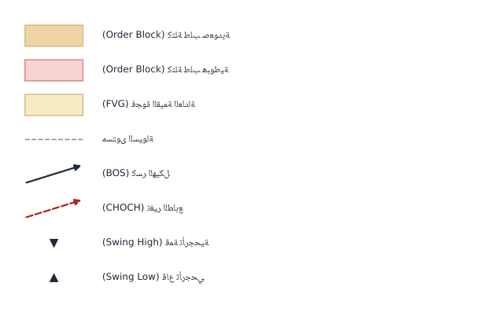
الشكل 1.1 — مفتاح الرموز البصرية المستخدمة في أشكال الكتاب
قبل الانتقال إلى الفصل التالي، حاول الإجابة عن الأسئلة التالية من الذاكرة، ثم راجع الجدول للتأكد:
(لا توجد "دراسة حالة" لهذا الفصل كونه فصلًا مرجعيًا؛ ستبدأ دراسات الحالة العملية من الفصل 2.)
مصطلح "الأموال الذكية" (Smart Money) يشير إلى رأس المال الذي تديره الجهات الأكثر معرفة وموارد وتأثيرًا في السوق: البنوك المركزية والتجارية، صناديق التحوط، صناديق التقاعد، شركات إدارة الأصول، وكبار صناع السوق (Market Makers). هذه الجهات تتداول بأحجام ضخمة، ولا تستطيع الدخول أو الخروج من صفقاتها دفعة واحدة دون التأثير الحاد على السعر، لذا فهي تنفذ أوامرها تدريجيًا وبطريقة مدروسة تترك آثارًا يمكن قراءتها على المخطط السعري.
في المقابل، يشير مصطلح "الأموال البطيئة" أو "أموال التجزئة" (Retail Money / Dumb Money) إلى المتداولين الأفراد، الذين غالبًا ما يتخذون قراراتهم بناءً على مؤشرات فنية تقليدية، أو ردود فعل عاطفية، أو أخبار متأخرة. مفاهيم الأموال الذكية (SMC) هي محاولة منهجية لقراءة أثر الفئة الأولى على المخطط، بدلًا من الاعتماد فقط على أدوات مصممة أساسًا لتحليل سلوك الفئة الثانية.
| الجهة | دورها في السوق |
|---|---|
| البنوك المركزية | تحديد السياسة النقدية، والتدخل المباشر أحيانًا في أسواق العملات |
| البنوك التجارية والاستثمارية | أكبر حجم تداول يومي في أسواق الفوركس والسندات، ولها أقسام تدفق أوامر (Order Flow Desks) مخصصة |
| صناديق التحوط | تتداول باستراتيجيات معقدة وأحجام كبيرة، وغالبًا ما تكون مصدر حركات الاندفاع القوية |
| صناع السوق (Market Makers) | يوفرون السيولة للطرفين (شراء وبيع)، ويستفيدون من فروق الأسعار وتجميع أوامر التجزئة |
| صناديق التقاعد والثروات السيادية | رأس مال ضخم موجّه غالبًا لاستراتيجيات طويلة الأجل، لكنه يؤثر على الاتجاهات الكبرى |
الفكرة المحورية في SMC هي أن السعر لا يتحرك عشوائيًا، بل يتحرك لتحقيق هدفين متكررين: تجميع السيولة ثم إعادة التوزيع بكفاءة باتجاه المصلحة الحقيقية للاعبين الكبار. بما أن أوامر هذه الجهات ضخمة جدًا مقارنة بحجم السوق اللحظي، فإنها تحتاج إلى طرف مقابل كافٍ لتنفيذ صفقاتها؛ وأفضل مصدر لهذا الطرف المقابل هو تجمعات أوامر وقف الخسارة والأوامر المعلقة لمتداولي التجزئة. من هنا تنبع معظم مفاهيم هذا الجزء من الكتاب: السيولة، كتل الطلب، الحافز، والفخاخ.
معظم المؤشرات الفنية التقليدية (مثل المتوسطات المتحركة أو RSI) هي أدوات متأخرة (Lagging)، أي أنها تُبنى على بيانات سعرية تاريخية وتعطي إشارتها بعد أن يكون جزء من الحركة قد وقع بالفعل. كما أن هذه المؤشرات لا تفرّق بين حركة سعرية ناتجة عن تدفق أوامر مؤسسي حقيقي، وحركة ناتجة عن تذبذب عشوائي قصير الأمد. هذا لا يعني أن المؤشرات عديمة الفائدة، لكنه يفسر لماذا يبحث كثير من المتداولين المتقدمين عن أطر تحليلية إضافية — مثل SMC — تحاول قراءة نية السوق بدلًا من الاكتفاء بردة الفعل على حركته.
المؤسسات لا "تتنبأ" بالسعر بالمعنى الذي يفهمه متداول التجزئة، بل تخطط لتنفيذ كميات ضخمة من الأوامر بأفضل متوسط سعر ممكن. هذا يعني أنها:
من المهم التمييز هنا بدقة: SMC لا يفترض وجود "مؤامرة" منظمة تستهدف متداولي التجزئة تحديدًا، بل يفترض أن كبار المتداولين — بحكم حجم أوامرهم — يبحثون بشكل طبيعي وقانوني عن السيولة الأكثر توفرًا لتنفيذ صفقاتهم، وهذا يتسبب أحيانًا في حركات سعرية تبدو "مفاجئة" لمن لا يفهم آلية تكوّنها. فهم هذه الآلية لا يعني اتهام السوق بالفساد، بل يعني ببساطة قراءة القواعد الحقيقية للعبة بدلًا من الاعتماد فقط على افتراضات مبسطة.
السيولة هي المحرك الأساسي الذي يفسر معظم سلوك السعر في إطار SMC، وسيُخصَّص لها الفصل الرابع كاملًا. لكن كمقدمة: كل أمر وقف خسارة، وكل أمر معلق (Pending Order)، يمثل سيولة كامنة. وكلما تجمعت هذه الأوامر عند مستوى سعري واحد (مثل قمة أو قاع واضح تكرر اختباره)، أصبح ذلك المستوى هدفًا جاذبًا لحركة سعرية تسعى لتفعيل تلك الأوامر قبل الانعكاس أو الاستمرار.
كثيرًا ما يصادف القارئ مصطلح ICT (اختصار Inner Circle Trader) أثناء بحثه عن مفاهيم الأموال الذكية على الإنترنت. ICT هو الاسم الذي اشتهرت به المدرسة التي صاغت أصلًا معظم المصطلحات المستخدمة في هذا الجزء من الكتاب (كتلة الطلب، FVG، السيولة، الحافز...). أما "Smart Money Concepts" فهو الاسم الذي شاع لاحقًا لوصف التنظيم والتبسيط التعليمي لهذه المفاهيم نفسها، بهدف تقديمها بشكل أكثر منهجية للمتداولين الجدد. بعبارة أخرى: ICT وSMC يتحدثان عن نفس الأفكار الجوهرية تقريبًا، والفرق بينهما أقرب إلى فرق التسمية والتقديم منه إلى فرق جوهري في المحتوى.
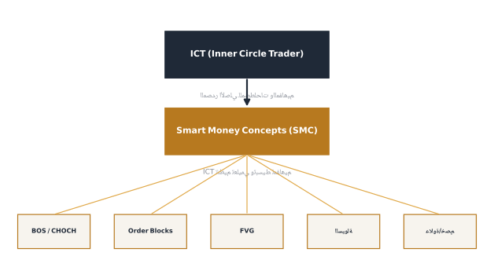
الشكل 2.2 — العلاقة بين ICT وSMC والمفاهيم الفرعية التي يغطيها هذا الجزء من الكتاب
افتح مخططًا يوميًا لأي زوج عملات رئيسي، وحدد ثلاث مناطق ترى أنها قد تحتوي على "سيولة متجمعة" (مثل قمم أو قيعان واضحة تكرر اختبارها). لا تتداول بعد — الهدف فقط تدريب العين على ملاحظة هذه المناطق قبل دراسة الفصول التالية بالتفصيل.
في أسواق الفوركس الكبرى، يلاحظ كثيرًا أن حركة سعرية قوية تحدث خلال الدقائق الأولى من افتتاح جلسة لندن أو نيويورك، غالبًا في اتجاه يخالف حركة الجلسة الآسيوية الهادئة السابقة لها. هذا النمط يفسَّر جزئيًا في SMC على أنه سحب لسيولة تجمعت عند قمم/قيعان الجلسة الهادئة، قبل أن يبدأ الاتجاه الحقيقي لليوم. سنعود لتحليل هذا النمط بتفصيل أكبر في الفصل 4 (السيولة) والفصل 9 (تدفق أوامر المؤسسات).
يوضّح الشكل 2.1 هذا المثال:
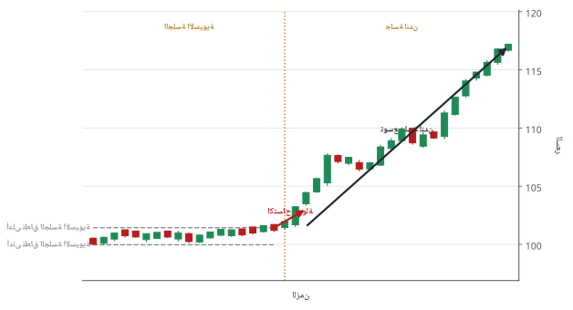
الشكل 2.1 — سحب سيولة الجلسة الآسيوية عند افتتاح جلسة لندن
هيكل السوق (Market Structure) هو الخريطة التي تصف كيف يتحرك السعر عبر الزمن من خلال سلسلة من القمم والقيعان. كل تحليل SMC يبدأ من هنا، لأن باقي المفاهيم (كتل الطلب، السيولة، الحافز) لا معنى لها دون تحديد الاتجاه العام أولًا. هيكل السوق يُقرأ بثلاث حالات رئيسية: صاعد، هابط، وعرضي.
قبل الخوض في تفاصيل كل حالة، لا بد من تعريف اللبنتين الأساسيتين اللتين يُبنى عليهما أي تحليل هيكلي: القمة التأرجحية والقاع التأرجحي.
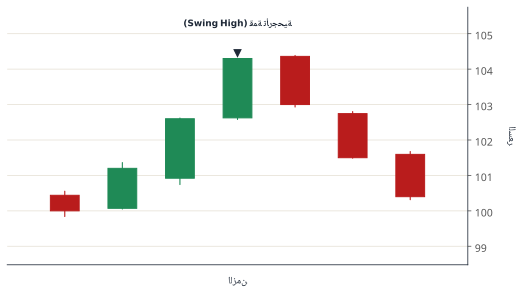
الشكل 3.3 — تعريف القمة التأرجحية (Swing High): أعلى نقطة يتشكل حولها انعكاس مؤقت للسعر
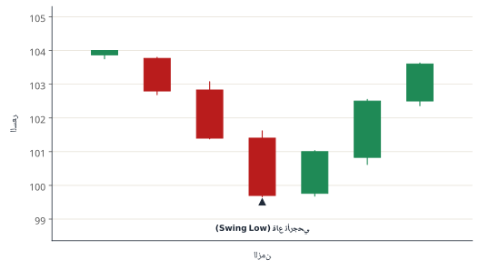
الشكل 3.4 — تعريف القاع التأرجحي (Swing Low): أدنى نقطة يتشكل حولها انعكاس مؤقت للسعر
يتكون الهيكل الصاعد من تتابع منتظم لقمم أعلى (HH) وقيعان أعلى (HL). طالما استمر هذا النمط، يُعتبر الانحياز العام صاعدًا، وتكون استراتيجية SMC الافتراضية هي البحث عن فرص شراء عند العودة لمناطق اهتمام (كتل الطلب) بدلًا من محاولة توقع القمة.
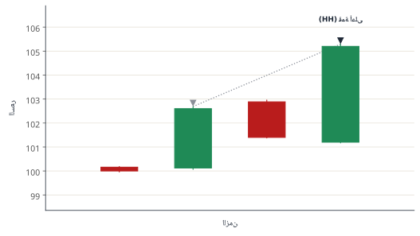
الشكل 3.5 — تعريف القمة الأعلى (HH): قمة تأرجحية جديدة أعلى من القمة التي سبقتها
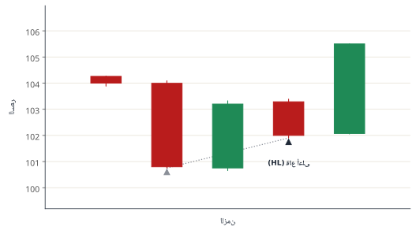
الشكل 3.6 — تعريف القاع الأعلى (HL): قاع تأرجحي جديد أعلى من القاع الذي سبقه
على النقيض، يتكون الهيكل الهابط من تتابع قمم أدنى (LH) وقيعان أدنى (LL). الانحياز هنا هابط، والاستراتيجية الافتراضية هي البحث عن فرص بيع عند الارتدادات نحو مناطق العرض.
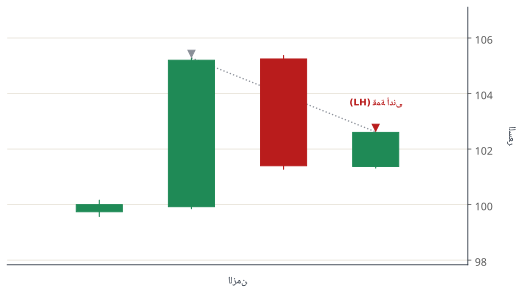
الشكل 3.7 — تعريف القمة الأدنى (LH): قمة تأرجحية جديدة أدنى من القمة التي سبقتها
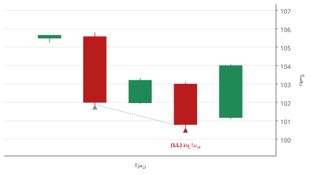
الشكل 3.8 — تعريف القاع الأدنى (LL): قاع تأرجحي جديد أدنى من القاع الذي سبقه
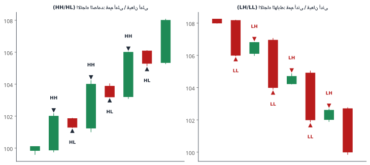
الشكل 3.2 — التعريف البصري الواضح لكل من HH وHL في الاتجاه الصاعد، وLH وLL في الاتجاه الهابط
يحدث عندما يتوقف السعر عن تكوين قمم/قيعان متتابعة بوضوح، ويتحرك بين مستويي دعم ومقاومة أفقيين تقريبًا. هذه المرحلة غالبًا ما تمثل تجميعًا (Accumulation) أو توزيعًا (Distribution) تستعد فيه المؤسسات لحركة الاتجاه القادمة، وهي من أخطر المراحل على متداولي التجزئة لكثرة الإشارات الكاذبة فيها.
يحدث BOS عندما يخترق السعر نقطة تأرجح سابقة في اتجاه الترند الحالي. مثال: في اتجاه صاعد، عندما يكسر السعر آخر قمة تأرجح (Swing High) بإغلاق واضح، هذا يُعد BOS صاعدًا يؤكد استمرار الاتجاه. الـ BOS هو إشارة استمرار، وليس إشارة انعكاس.
على عكس BOS، يحدث CHOCH عندما يكسر السعر نقطة هيكلية بعكس اتجاه الترند الحالي. مثال: في اتجاه صاعد، عندما يفشل السعر في تكوين قاع أعلى ويكسر آخر قاع تأرجح هابطًا، هذا CHOCH يشير إلى احتمال انعكاس الاتجاه أو على الأقل بداية مرحلة تصحيحية جادة. يُعد التمييز بين BOS وCHOCH من أهم المهارات الأساسية في SMC.
| المعيار | BOS | CHOCH |
|---|---|---|
| الاتجاه بالنسبة للترند الحالي | مع الاتجاه | عكس الاتجاه |
| الدلالة | استمرار الاتجاه | انعكاس محتمل |
| رد الفعل المناسب | البحث عن استمرار في نفس الاتجاه | إعادة تقييم الانحياز والحذر من الدخول ضد الاتجاه الجديد |
الاختراق الحقيقي يتميز عادة بإغلاق شمعة واضح خارج المستوى المكسور مصحوبًا بزخم وحجم تداول متزايد، بينما الاختراق الوهمي (False Breakout) يخترق المستوى بفتيل فقط ثم يعود السعر بسرعة إلى داخل النطاق السابق. الاختراقات الوهمية غالبًا ما تكون في الواقع عمليات سحب سيولة (سيُشرح بالتفصيل في الفصل 4)، وليست أخطاء عشوائية.
يجب التمييز دومًا بين "القمة/القاع الهيكلي" (الذي يُستخدم لتحديد BOS/CHOCH) و"القمة/القاع الداخلي" (الذي يتشكل أثناء التصحيحات الصغيرة). القاعدة العملية: كلما ارتفع الإطار الزمني، أصبحت القمم والقيعان المحددة عليه أكثر أهمية وموثوقية للتحليل.
على مخطط الساعة لأي أصل، حدد آخر خمس نقاط تأرجح (قمم وقيعان)، وصنّف كل كسر لاحق للسعر إلى BOS أو CHOCH بناءً على القواعد أعلاه.
لنفترض أن أصلًا يتداول في اتجاه صاعد واضح مكوّن من ثلاث قمم أعلى وثلاثة قيعان أعلى متتالية. عند الاختبار الرابع، يفشل السعر في تجاوز القمة السابقة، ثم يكسر هبوطًا آخر قاع تأرجح مسجّلاً CHOCH واضحًا. المتداول الذي يعرف الفرق بين BOS وCHOCH سيتوقف عن البحث عن صفقات شراء جديدة عند هذه النقطة، وسيبدأ بمراقبة تشكّل هيكل هابط جديد بدلاً من ذلك — بينما سيستمر متداول التجزئة التقليدي في محاولة "الشراء عند كل انخفاض" لأنه لم يلاحظ تغيّر الشخصية.
يوضّح الشكل 3.1 هذا المثال:
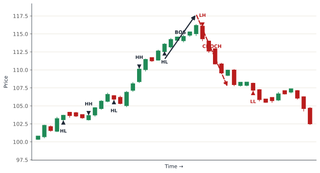
الشكل 3.1 — تسلسل HH-HL في اتجاه صاعد يتبعه CHOCH وتكوّن هيكل هابط جديد
في سياق SMC، لا تعني "السيولة" فقط سهولة تنفيذ الصفقات، بل تشير تحديدًا إلى تجمعات أوامر معلقة عند مستويات سعرية محددة: أوامر وقف خسارة لصفقات شراء وبيع قائمة، وأوامر دخول معلقة (Buy Stop / Sell Stop) لمتداولين ينتظرون كسر مستوى معين. هذه التجمعات تمثل "وقودًا" يمكن للمؤسسات استخدامه لتنفيذ أوامرها الضخمة دون التأثير الكبير على متوسط سعر الدخول أو الخروج.
عندما تريد مؤسسة كبيرة بيع كمية ضخمة من أصل ما، فإنها تحتاج إلى مشترين كافين لاستيعاب هذا العرض. أفضل نقطة لوجود مشترين بكثافة هي المناطق التي توجد فيها أوامر شراء معلقة أو أوامر وقف خسارة لمراكز بيع سابقة (والتي تتحول إلى أوامر شراء عند تفعيلها). لذلك، من الشائع أن يتحرك السعر أولًا نحو هذه المناطق "لسحب" هذه السيولة، قبل التحرك في الاتجاه الحقيقي المقصود.
| النوع | الوصف |
|---|---|
| سيولة الشراء (Buy-side Liquidity) | تتجمع فوق القمم الواضحة، حيث توجد أوامر وقف خسارة لمراكز بيع وأوامر شراء معلقة |
| سيولة البيع (Sell-side Liquidity) | تتجمع أسفل القيعان الواضحة، حيث توجد أوامر وقف خسارة لمراكز شراء وأوامر بيع معلقة |
| سيولة الاتجاه (Trend Liquidity) | تتشكل تدريجيًا عند كل نقطة تصحيح داخل اتجاه مستمر |
| السيولة الهندسية (Equal Highs/Lows Liquidity) | تتشكل عند قمم أو قيعان متساوية تقريبًا، وتُعد من أوضح وأقوى إشارات تجمع السيولة |
عندما يفشل السعر مرتين أو أكثر في تجاوز نفس مستوى القمة تقريبًا (Equal Highs)، فهذا يعني أن متداولين كثيرين وضعوا أوامر وقف خسارة أو أوامر شراء معلقة فوق ذلك المستوى تقريبًا بنفس السعر — مما يخلق "بركة سيولة" مكثفة وجاذبة جدًا لحركة سحب سريعة. نفس المنطق ينطبق على القيعان المتساوية (Equal Lows) من ناحية البيع.
تشير إلى الأنماط الهندسية الواضحة للعين مثل القمم/القيعان المزدوجة أو الثلاثية التي تبدو "أنماطًا فنية كلاسيكية"، لكنها تُقرأ في SMC كمصائد سيولة أولًا، قبل أن تُقرأ كنموذج انعكاس تقليدي.
سحب السيولة هو الحركة السعرية التي تخترق مستوى القمة/القاع المستهدف بشكل سريع (غالبًا بفتيل شمعة طويل) ثم ترتد بسرعة في الاتجاه المعاكس. هذا النمط يُعد من أقوى إشارات SMC عند اقترانه بتغيّر الشخصية (CHOCH) على إطار زمني أصغر مباشرة بعد السحب.
خطوات عملية لتحديد السيولة على أي مخطط:
على مخطط يومي، ابحث عن ثلاث حالات لقمم أو قيعان متساوية تقريبًا، وتتبع ماذا حدث للسعر خلال الأيام التالية لأول مرة لامس فيها ذلك المستوى للمرة الثانية أو الثالثة.
في نمط متكرر على أزواج الفوركس الرئيسية، يتشكل قاعان متقاربان جدًا في السعر خلال أسبوعين، مما يخلق انطباعًا لدى متداولي التجزئة بوجود "دعم قوي مزدوج". يقترب السعر من هذا المستوى للمرة الثالثة، يخترقه بفتيل حاد لبضع ساعات فقط (مما يفعّل أوامر وقف الخسارة لكل من اشترى عند القاعين السابقين)، ثم يرتد بقوة صعودًا مسجّلاً CHOCH على فريم الساعة. من قرأ هذا كسحب سيولة بدلاً من "كسر دعم مزدوج" كان بإمكانه الدخول شراءً في منطقة ممتازة، بينما أُغلقت صفقات من باعوا عند الكسر بخسارة سريعة.
يوضّح الشكل 4.1 هذا المثال:
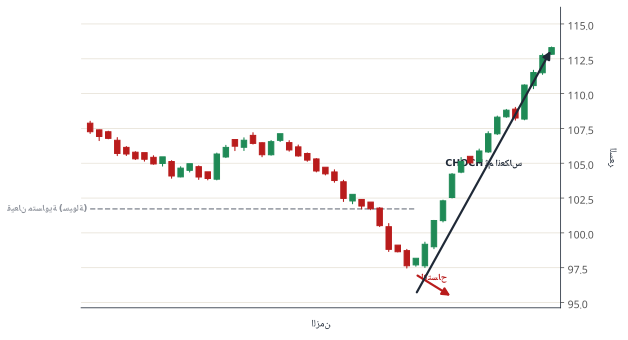
الشكل 4.1 — قاعان متساويان تقريبًا، سحب سيولة سريع، ثم CHOCH وارتداد صعودي
كتلة الطلب هي آخر شمعة (أو مجموعة شموع متتالية) معاكسة الاتجاه، قبل حدوث حركة اندفاعية قوية في الاتجاه المعاكس تكسر هيكل السوق (BOS). تعبّر هذه المنطقة عن آخر نقطة قام فيها اللاعبون الكبار بتجميع أو تصريف مراكزهم قبل دفع السعر بقوة، وبالتالي فإنها تمثل منطقة مرشحة لعودة السعر إليها مستقبلًا كدعم أو مقاومة.
ليست كل شمعة معاكسة قبل حركة قوية تُعتبر كتلة طلب صالحة. المعايير الأساسية للصلاحية:
عندما تُخترق كتلة طلب صالحة (أي يفشل السعر في الارتداد منها ويكسرها)، فإنها لا "تختفي" بل تتحول إلى ما يُعرف بـ Breaker Block: منطقة تتبدل فيها الوظيفة — كتلة طلب هابطة تُكسر تتحول إلى دعم محتمل عند إعادة اختبارها من الأسفل، والعكس صحيح لكتلة الطلب الصاعدة المكسورة.
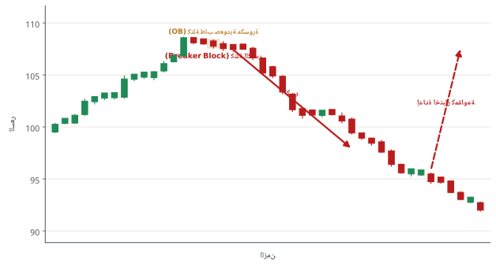
الشكل 5.2 — كتلة الطلب بعد كسرها وتحوّلها إلى بلوك مكسور (Breaker Block)
مصطلح قريب من الـ Breaker لكنه يصف تحديدًا المنطقة التي "تُخفَّف" فيها أوامر المؤسسات غير المنفذة بالكامل من كتلة سابقة، عندما يعاود السعر زيارتها قبل استئناف الاتجاه الأصلي (بعكس الـ Breaker الذي يرتبط بانعكاس اتجاه الوظيفة).
منطقة تتشكل من عدة فتائل شموع طويلة عند نفس المستوى تقريبًا، تدل على أن جهة كبيرة تدافع بقوة عن ذلك المستوى (سواء لمنع الاختراق أو للدفاع عن مركز قائم)، دون أن يشترط وجود جسم شمعة كبير كما في كتلة الطلب التقليدية.
| المعيار | كتلة قوية | كتلة ضعيفة |
|---|---|---|
| نوع الحركة التالية | BOS واضح وقوي | تصحيح بسيط فقط |
| عدد مرات الاختبار السابقة | لم تُختبر بعد (طازجة) | اختُبرت عدة مرات |
| حجم التداول (إن توفر) | مرتفع عند التكوّن | منخفض أو غير واضح |
| علاقتها بالسيولة | تسبقها عملية سحب سيولة واضحة | لا ترتبط بأي سحب سيولة ملحوظ |
يتشابه مفهوم كتلة الطلب مع "مناطق العرض والطلب" في التحليل الفني الكلاسيكي، لكن الفرق الجوهري أن كتلة الطلب في SMC تُحدَّد بدقة أكبر (شمعة أو شمعتان محددتان مرتبطتان مباشرة بكسر هيكلي)، بينما تُرسم مناطق العرض/الطلب التقليدية غالبًا كنطاق أوسع وأقل دقة.
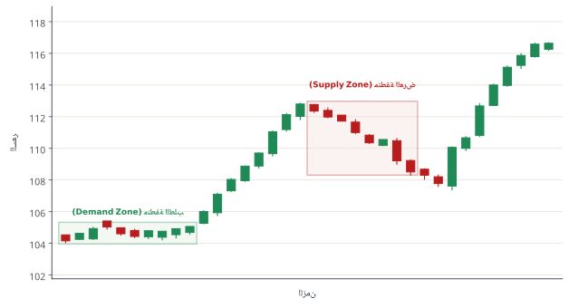
الشكل 5.3 — مناطق العرض والطلب الكلاسيكية: نطاق أوسع مقارنة بدقة كتلة الطلب في SMC
قاعدة إرشادية شائعة (وليست مطلقة): كلما زاد عدد مرات اختبار كتلة الطلب لنفس المنطقة، ضعفت احتمالية نجاحها في المرة التالية، لأن جزءًا من الأوامر الكامنة فيها يكون قد نُفِّذ بالفعل. بعد نحو ثلاث لمسات، يُنصح غالبًا بالبحث عن كتلة أحدث بدلًا من الاعتماد المتكرر على نفس المنطقة.
حدد على مخطط 4 ساعات آخر ثلاث كتل طلب صاعدة صالحة (حسب معايير القسم 5.4)، وسجّل: هل عاد السعر لاختبارها؟ وإن عاد، هل احترمها أم اخترقها؟
في اتجاه صاعد واضح، تتشكل شمعة هابطة صغيرة، يليها مباشرة اندفاع صعودي قوي يكسر آخر قمة تأرجح بوضوح (BOS مؤكد). هذه الشمعة الهابطة تُعتبر كتلة طلب صاعدة طازجة. بعد عدة أيام، يتصحح السعر ليعاود زيارة هذه المنطقة تحديدًا، مكوّنًا فجوة قيمة عادلة (FVG) داخل نفس النطاق تقريبًا. المتداول الذي يرصد هذا التطابق (كتلة طلب + FVG) يحصل على نقطة دخول عالية الاحتمالية، بعكس من يشتري عشوائيًا عند أي انخفاض بسيط في الاتجاه الصاعد.
يوضّح الشكل 5.1 هذا المثال:
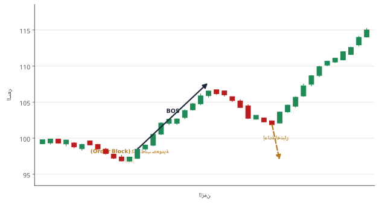
الشكل 5.1 — تكوّن كتلة طلب صاعدة (آخر شمعة هابطة قبل BOS) وإعادة اختبارها لاحقًا
الاختلال (Imbalance) هو أي منطقة سعرية تحرك فيها السعر بسرعة أكبر من قدرة السوق على "التداول العادل" فيها، بحيث تتشكل فجوة بين العرض والطلب لم تُنفَّذ فيها أوامر كافية من كلا الطرفين. هذه المناطق تُعتبر "غير مكتملة" احصائيًا، ويميل السعر لإعادة زيارتها لاحقًا لموازنة ما فاته.
تُحدَّد الـ FVG عمليًا عبر ثلاث شموع متتالية: عندما لا يتداخل الفتيل العلوي للشمعة الأولى مع الفتيل السفلي للشمعة الثالثة (في حالة اندفاعة صعودية)، فإن الفراغ بينهما يمثل FVG صاعدة. والعكس تمامًا في الاندفاعة الهابطة.
| نوع الاندفاعة | تعريف الـ FVG |
|---|---|
| صعودية | الفراغ بين قمة الشمعة الأولى وقاع الشمعة الثالثة، حين لا تتقاطعان |
| هبوطية | الفراغ بين قاع الشمعة الأولى وقمة الشمعة الثالثة، حين لا تتقاطعان |
تتشكل الاختلالات عادة عند صدور خبر اقتصادي مفاجئ، أو عند سحب سيولة كبيرة يليه اندفاع قوي بلا تردد، أو عند دخول مؤسسي مفاجئ (كما في شمعة IFC التي سنناقشها في الفصل 9). كلما كانت الاندفاعة أقوى وأسرع، كانت الفجوة أوسع وأكثر أهمية على المخطط.
من الملاحظ تكرارًا أن السعر يميل للعودة لملء جزء من الفجوة (وليس بالضرورة كلها) قبل استئناف اتجاهه الأصلي. هذا لا يعني أن الفجوة تُملأ دائمًا بالكامل، بل يكفي غالبًا اختبار حافتها القريبة من اتجاه الحركة الأصلية لاعتبارها "خدمت غرضها".
استراتيجية الدخول النموذجية:
من أقوى إعدادات SMC هو تطابق منطقة FVG مع كتلة طلب على نفس المستوى تقريبًا (كما ورد في دراسة حالة الفصل 5). هذا التطابق (Confluence) يرفع احتمالية نجاح الصفقة لأنه يجمع بين إشارتين مستقلتين تشيران لنفس المنطقة.
على مخطط 15 دقيقة، حدد خمس حالات FVG واضحة وفقًا لقاعدة الشموع الثلاث، وسجّل نسبة الفجوات التي عاد إليها السعر خلال الجلسات التالية.
بعد صدور بيان اقتصادي مؤثر، يندفع السعر صعودًا بثلاث شموع قوية متتالية تاركة فجوة قيمة عادلة واضحة. يستمر الاتجاه الصاعد ليوم كامل تقريبًا، ثم يتصحح تدريجيًا حتى يلامس الحافة السفلية للفجوة بالضبط، والتي تتطابق أيضًا مع كتلة طلب صاعدة سابقة. الارتداد من هذه المنطقة يكون حادًا وسريعًا، مؤكدًا قوة التطابق بين الإشارتين.
يوضّح الشكل 6.1 هذا المثال:
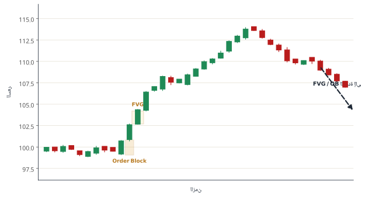
الشكل 6.1 — تشكّل FVG أثناء اندفاعة صعودية، ثم عودة السعر لتطابق الفجوة مع كتلة الطلب
الحافز هو حركة سعرية صغيرة مصممة (من منظور SMC) لجذب متداولي التجزئة إلى الدخول أو وضع أوامر معلقة عند مستوى معين، قبل أن يتحرك السعر بعكس توقعاتهم مباشرة نحو الهدف الحقيقي. غالبًا ما يظهر الحافز كقمة أو قاع صغير يتشكل قبل كتلة الطلب "الحقيقية" على الإطار الزمني الأكبر.
يكون الحافز مفيدًا للتحليل عندما يتوضع بين نقطة السيولة الرئيسية وكتلة الطلب الأساسية؛ أي أن ترتيب الأحداث المتوقع هو: تكوّن كتلة طلب على فريم أكبر → حافز صغير يجذب متداولين للدخول المبكر أو غير الصحيح → سحب سيولة الحافز → استكمال الحركة نحو كتلة الطلب الأصلية أو الهدف الأبعد.
نوع من الحافز يتشكل داخل نطاق تصحيحي صغير على فريم منخفض، ويصعب اكتشافه دون النظر إلى الفريم الأعلى أولًا لتحديد أين يُفترض أن ينتهي التصحيح فعليًا.
علامات مساعدة لتمييز الحافز:
المتداولون المتقدمون يستخدمون كسر الحافز (بعد سحب سيولته) كتأكيد إضافي قبل الدخول من كتلة الطلب أو منطقة الاهتمام الأساسية، بدلًا من الدخول الفوري عند أول لمسة للمنطقة الكبرى.
القاعدة الذهبية: لا تدخل صفقة بمجرد رؤية كسر مستوى صغير على فريم منخفض دون التأكد من موقعه ضمن السياق الأكبر (الانحياز، السيولة الرئيسية، كتلة الطلب الأساسية). كثير من خسائر متداولي SMC المبتدئين تأتي من التعامل مع كل حافز على أنه إشارة دخول مستقلة.
على مخطط 5 دقائق ضمن اتجاه محدد على فريم الساعة، حدد حركة صغيرة تسبق مباشرة الوصول إلى كتلة طلب أكبر، وحلل ما إذا كانت تتوافق مع تعريف الحافز.
ضمن اتجاه صاعد على فريم الساعة، يتشكل قاع صغير على فريم 5 دقائق يجذب عددًا من متداولي التجزئة للبيع عند كسره الأولي الوهمي. لكن هذا الكسر لا يعدو كونه حافزًا يسحب سيولة بسيطة، إذ يرتد السعر بسرعة صعودًا نحو كتلة الطلب الرئيسية على فريم الساعة، محققًا الحركة الصعودية المتوقعة أصلًا. من فهم موقع هذا الكسر الصغير ضمن السياق الأكبر تجنّب الدخول بيعًا في اللحظة الخاطئة.
يوضّح الشكل 7.1 هذا المثال:
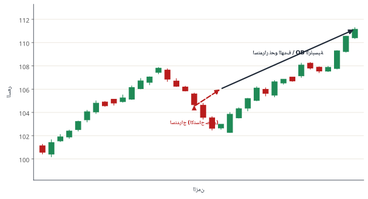
الشكل 7.1 — حافز صغير يسحب سيولة قبل استكمال الاتجاه نحو منطقة الاهتمام الأساسية
بعد تحديد نطاق سعري واضح (بين قمة تأرجح وقاع تأرجح رئيسيين)، يمكن تقسيمه إلى نصفين: النصف السفلي يُعتبر "منطقة خصم" (Discount) — أي منطقة سعر رخيص نسبيًا يُفضَّل الشراء منها. النصف العلوي يُعتبر "منطقة علاوة" (Premium) — أي منطقة سعر مرتفع نسبيًا يُفضَّل البيع منها. الفكرة تشبه مبدأ "الشراء من الأسفل والبيع من الأعلى" لكن بتعريف رياضي دقيق للنطاق.
يُستخدم أداة فيبوناتشي (بمد الأداة من القاع إلى القمة أو العكس حسب الاتجاه) لتقسيم النطاق بدقة، حيث يمثل مستوى 50% نقطة الفصل بين الخصم والعلاوة، بينما تُستخدم مستويات مثل 61.8% و70.5% كمناطق "خصم عميق" أو "علاوة عميقة" مفضّلة للدخول.
قاعدة إرشادية شائعة بين متداولي SMC تنص على تفضيل الدخول شراءً فقط عندما يتصحح السعر إلى منطقة تقع بين 70% و85% من ارتداد فيبوناتشي للحركة الصاعدة الأخيرة (أي في أعمق مناطق الخصم)، بدلًا من الدخول عند أي تصحيح بسيط قريب من القمة.
| الانحياز | المنطقة المفضلة للدخول | نوع الصفقة |
|---|---|---|
| صاعد | منطقة الخصم (النصف السفلي، خصوصًا 70%-85% ارتدادًا) | شراء |
| هابط | منطقة العلاوة (النصف العلوي، خصوصًا 70%-85% ارتدادًا) | بيع |
أفضل نقاط الدخول تجمع بين ثلاثة عناصر متزامنة: (1) وجود السعر في منطقة الخصم أو العلاوة المناسبة للانحياز، (2) تطابق ذلك مع كتلة طلب/عرض أو FVG، (3) وجود سحب سيولة سابق مباشرة قبل الوصول للمنطقة. كلما تجمعت هذه العناصر الثلاثة معًا، ارتفعت جودة نقطة الدخول بشكل ملحوظ.
على مخطط 4 ساعات، حدد آخر نطاق حركة صاعدة كبير، وارسم فيبوناتشي عليه، ثم حدد أين تقع منطقة الخصم العميقة (70%-85%) وتحقق إن كانت تتطابق مع كتلة طلب موجودة مسبقًا.
بعد اندفاعة صعودية قوية، يتصحح السعر تدريجيًا. يتوقف كثير من المتداولين عن الشراء عند أول ارتداد بسيط (حوالي 20%-30% من الحركة)، بينما يستمر السعر في التصحح حتى يصل إلى منطقة 78% تقريبًا من ارتداد فيبوناتشي، وهي نفسها منطقة كتلة طلب صاعدة سابقة. الارتداد من هذه المنطقة تحديدًا يكون أقوى بكثير من أي ارتداد سابق أثناء التصحيح، لتطابق ثلاثة عوامل معًا: الخصم العميق، كتلة الطلب، وسحب سيولة بسيط سبق الوصول للمنطقة.
يوضّح الشكل 8.1 هذا المثال:
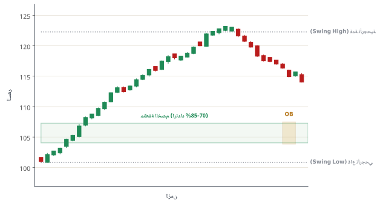
الشكل 8.1 — منطقة الخصم العميقة (70%–85% ارتدادًا) متطابقة مع كتلة طلب
تدفق الأوامر (Order Flow) يشير إلى دراسة كيفية دخول وخروج رأس المال الكبير من السوق عبر شموع أو مجموعات شموع معينة تحمل خصائص مميزة (حجم كبير، سرعة تنفيذ عالية، امتداد قوي). في SMC، يُستخدم هذا المفهوم لتحديد اللحظات التي "يدخل" فيها لاعب كبير فعليًا، بدلًا من مجرد ملاحظة نتيجة دخوله لاحقًا.
شمعة (أو مجموعة شموع متتالية) ذات جسم كبير نسبيًا مقارنة بالشموع المحيطة، تظهر فجأة وسط حركة هادئة نسبيًا، وتسحب سيولة واضحة (قمة أو قاع قريب) في طريقها. تُفسَّر هذه الشمعة كدليل على دخول تمويل مؤسسي ضخم في اتجاه معين، وغالبًا ما تصبح منطقتها لاحقًا كتلة طلب أو عرض ذات أهمية عالية.
نوع خاص من شموع الاندفاع يرتبط مباشرة بتوقيت حدث إخباري عالي التأثير (مثل قرار سعر فائدة أو تقرير توظيف رئيسي). يتميز بحجم استثنائي وسرعة تنفيذ عالية جدًا، وغالبًا ما يحدد اتجاه السوق للساعات أو الأيام التالية.
منطقة سعرية كانت تعمل تاريخيًا كمقاومة، ثم أصبحت بعد اختراقها ونجاح إعادة اختبارها تعمل كدعم (أو العكس). تشبه مفهوم "انعكاس الأدوار" في التحليل الفني التقليدي، لكنها تُقرأ هنا ضمن سياق تدفق أوامر مؤسسي واضح بدلًا من مجرد ملاحظة بصرية للمستوى.
| النمط | الوصف |
|---|---|
| تراكم ثم اندفاع (Accumulation → Expansion) | فترة تجميع هادئة ضمن نطاق ضيق، تليها اندفاعة قوية باتجاه واحد بعد سحب السيولة على طرفي النطاق |
| اندفاع ثم إعادة توازن (Expansion → Re-balance) | حركة اندفاعية قوية تتبعها فترة تصحيح تدريجي نحو مناطق الاختلال (FVG) قبل استئناف الاتجاه |
| توزيع (Distribution) | فترة تماسك عند مستويات مرتفعة تسبق انعكاسًا هبوطيًا، بعد استنفاد الطلب من مشترين متأخرين |
راجع مخططًا يوميًا حول موعد أحد الأحداث الاقتصادية الكبرى (مثل قرار فائدة أو تقرير توظيف)، وحدد الشمعة أو الشموع التي تُظهر خصائص IFC أو BCD وفقًا للتعريفات أعلاه.
في يوم صدور قرار سعر فائدة غير متوقع من بنك مركزي كبير، تتشكل شمعة واحدة ضخمة الحجم تتجاوز متوسط حجم الشموع المحيطة بعدة أضعاف، تسحب في طريقها سيولة قمة أو قاع بارز، وتترك خلفها اختلالًا واضحًا (FVG). خلال الأيام التالية، يتحرك السعر في اتجاه هذه الشمعة بثبات، بينما تتحول منطقتها إلى كتلة طلب/عرض رئيسية يعاد اختبارها بنجاح أكثر من مرة.
يوضّح الشكل 9.1 هذا المثال:
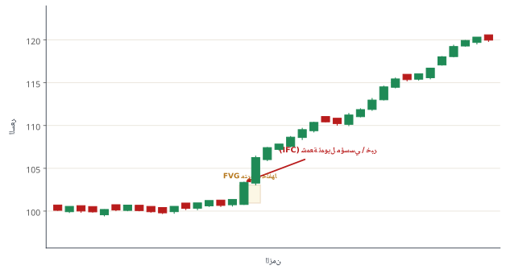
الشكل 9.1 — شمعة تمويل مؤسسي (IFC) تسحب السيولة وتترك FVG خلفها
لا يُقرأ أي مفهوم من مفاهيم SMC بمعزل عن الإطار الزمني الذي يظهر عليه. المبدأ الأساسي هو أن الأطر الزمنية الأكبر تحدد السياق (الانحياز العام، المناطق الرئيسية)، بينما تُستخدم الأطر الأصغر لتحسين التوقيت الدقيق للدخول والخروج ضمن ذلك السياق.
مثل 1 و5 و15 دقيقة. تُستخدم لرصد تفاصيل دقيقة كالحوافز وتغيّر الشخصية الصغير عند الوصول إلى منطقة اهتمام محددة على فريم أعلى، لكنها غير موثوقة بمفردها لتحديد الانحياز العام لأنها مليئة بالتذبذب العشوائي قصير الأمد.
مثل الساعة و4 ساعات. تُستخدم غالبًا كجسر بين الصورة الكبرى والتنفيذ الدقيق: تحديد كتل الطلب والمناطق التي سيُراقَب اقتراب السعر منها، ثم الانتقال للفريم الأصغر لتفاصيل الدخول.
مثل اليومي والأسبوعي. تحدد الانحياز الاستراتيجي العام، ومناطق السيولة والكتل الأكثر أهمية التي تستحق المتابعة، وتُعتبر "الحكم الفصل" عند تعارض الإشارات بين الأطر المختلفة.
القاعدة العملية: لا تفتح صفقة تخالف الانحياز الظاهر على الفريم الأعلى إلا بوجود مبرر استثنائي قوي جدًا (مثل CHOCH واضح جدًا يظهر أيضًا على ذلك الفريم الأعلى نفسه). التعارض الشائع بين الفريمات غالبًا ما يكون علامة على أن الفريم الأصغر يعرض تصحيحًا مؤقتًا فقط، وليس انعكاسًا حقيقيًا.
نموذج عملي شائع يُطلق عليه أحيانًا "نموذج الثلاثية الزمنية":
| الفريم | الدور |
|---|---|
| يومي / 4 ساعات | تحديد الانحياز العام ومنطقة الاهتمام الرئيسية |
| ساعة / 15 دقيقة | رصد اقتراب السعر من المنطقة، وتحديد كتلة طلب/FVG أدق |
| 5 دقائق / 1 دقيقة | توقيت الدخول الفعلي بعد رصد تأكيد (CHOCH صغير، سحب سيولة محلي) |
اختر أصلًا ماليًا، وحدد الانحياز على الفريم اليومي، ثم انزل إلى فريم الساعة لتحديد أقرب منطقة اهتمام، ثم إلى فريم 5 دقائق لرصد نقطة دخول محتملة ضمن تلك المنطقة.
على الفريم اليومي، يظهر انحياز صاعد واضح مع كتلة طلب حديثة لم تُختبر بعد. عند اقتراب السعر من هذه المنطقة على فريم الساعة، يظهر تصحيح هابط بسيط. بدلًا من افتراض انعكاس الاتجاه، ينتقل المتداول إلى فريم 5 دقائق حيث يلاحظ سحب سيولة صغيرًا يليه CHOCH صعودي محلي — وهو التأكيد الذي يستخدمه للدخول شراءً بما يتوافق مع الانحياز اليومي الأصلي.
يوضّح الشكل 10.1 هذا المثال:
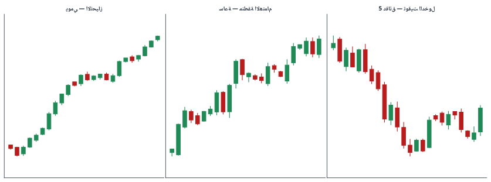
الشكل 10.1 — تدرّج التحليل عبر الأطر الزمنية الثلاثة: السياق، الرصد، والتنفيذ
القاعدة الأولى في أي طريقة دخول SMC: التداول مع اتجاه الهيكل السائد على الفريم الأعلى، إلا في حالات CHOCH واضحة ومؤكدة. الدخول عكس الهيكل بلا مبرر قوي هو السبب الأكثر شيوعًا لخسائر المتداولين الجدد في هذا المنهج.
بعد تأكد CHOCH على الفريم المناسب، يُنتظر عادة تكوّن كتلة طلب/عرض جديدة تتماشى مع الاتجاه الجديد، بدلًا من الدخول الفوري عند لحظة الكسر نفسها.
| طريقة الدخول | الوصف المختصر | الفصل المرجعي |
|---|---|---|
| من كتلة الطلب/العرض | انتظار عودة السعر لآخر كتلة طلب/عرض طازجة مع الاتجاه | الفصل 5 |
| من منطقة الفليب | الدخول عند إعادة اختبار ناجحة لمنطقة تبدلت وظيفتها | الفصل 9 |
| من البلوك المكسور | الدخول عند إعادة اختبار كتلة مكسورة بوظيفة جديدة | الفصل 5 |
| من بلوك التخفيف | الدخول عند عودة السعر لتخفيف أوامر غير منفذة سابقًا | الفصل 5 |
| من IFC/BCD | الدخول عند إعادة اختبار منطقة شمعة تمويل مؤسسي أو شمعة أخبار | الفصل 9 |
| من الاختلالات (FVG) | الدخول عند لمس حافة فجوة القيمة العادلة القريبة | الفصل 6 |
| من بلوك الرفض | الدخول عند تأكد دفاع متكرر عن مستوى عبر فتائل رفض | الفصل 5 |
| من مستويات فيبوناتشي | الدخول ضمن منطقة الخصم/العلاوة العميقة (70%-85%) | الفصل 8 |
قائمة تحقق عملية قبل أي دخول في منهج SMC:
كلما زادت الإجابات الإيجابية على هذه الأسئلة، ارتفعت جودة الصفقة المرشحة.
اختر صفقة تاريخية ناجحة أو خاسرة من سجلك الخاص (أو من مخطط تاريخي)، وطبّق عليها قائمة التحقق المكونة من ست نقاط أعلاه، وحدد أين كانت نقاط القوة والضعف في القرار الأصلي.
يحدد متداول انحيازًا صاعدًا واضحًا على الفريم اليومي، مع كتلة طلب طازجة تتوافق مع منطقة خصم عميقة (78% ارتدادًا)، وقد سبقها سحب سيولة واضح أسفل قاع بارز. عند وصول السعر لهذه المنطقة، يظهر على فريم 15 دقيقة CHOCH صعودي محلي مؤكد. بتطابق خمسة عناصر مختلفة (الانحياز، كتلة الطلب، الخصم العميق، سحب السيولة، وتأكيد الفريم الأصغر)، تكون هذه الصفقة مرشحة قوية جدًا مقارنة بصفقة تعتمد على عنصر واحد فقط.
يوضّح الشكل 11.1 هذا المثال:
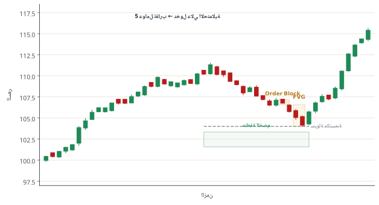
الشكل 11.1 — تطابق خمسة عناصر من SMC عند نفس منطقة الدخول
بعد استعراض المفاهيم الفردية في الفصول السابقة، يقدّم هذا الفصل خمسة أنظمة تداول متكاملة تجمع هذه المفاهيم في عمليات قرار واضحة وقابلة للتكرار.
لا يوجد نظام "مثالي" واحد يناسب جميع المتداولين؛ الأنظمة الخمسة أعلاه نقاط انطلاق يمكن تعديلها حسب الأصل المتداول، الإطار الزمني المفضل، وشخصية المتداول (البعض يفضل صفقات أقل وأكثر تأكيدًا، والبعض يفضل تكرارًا أعلى بمخاطرة أصغر لكل صفقة). المهم أن يكون النظام المُختار مكتوبًا بوضوح وقابلًا للتكرار، وليس مجموعة انطباعات متغيرة من صفقة لأخرى.
اختر نظامًا واحدًا من الأنظمة الخمسة، وطبّقه بشكل موثّق (بدون تنفيذ فعلي إن أردت) على عشر فرص تاريخية مختلفة، ثم قيّم نسبة النجاح التقريبية.
خلال أسبوع تداول واحد على زوج عملات رئيسي، يحدد متداول انحيازًا صاعدًا ثابتًا على الفريم اليومي طوال الأسبوع. يطبق النظام الأول (كتلة طلب) يوم الاثنين محققًا ربحًا، ثم النظام الثاني (سحب سيولة + FVG) يوم الأربعاء بعد حدث إخباري محقّقًا ربحًا إضافيًا، بينما يتجنب يوم الثلاثاء بسبب غياب أي تطابق واضح بين معايير أي من الأنظمة الخمسة. هذا المثال يوضح أن الانضباط في عدم الدخول عند غياب المعايير لا يقل أهمية عن الدخول عند توفرها.
يوضّح الشكل 12.1 هذا المثال:
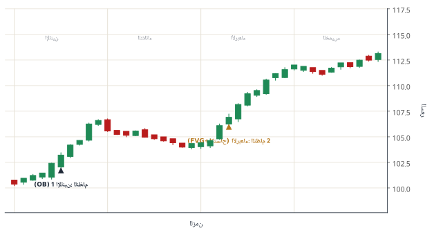
الشكل 12.1 — تطبيق نظامين مختلفين من أنظمة SMC خلال أسبوع تداول واحد
التحليل الأساسي هو دراسة العوامل الاقتصادية والمالية والسياسية التي تحدد القيمة الحقيقية (Fair Value) لأصل مالي، سواء كان عملة، سهمًا، أو سلعة. بينما يهتم التحليل الفني بـ"كيف" يتحرك السعر، يهتم التحليل الأساسي بـ"لماذا" يجب أن يتحرك السعر في اتجاه معين على المدى المتوسط والطويل.
| وجه المقارنة | التحليل الأساسي | التحليل الفني |
|---|---|---|
| الأساس | البيانات الاقتصادية والمالية | حركة السعر والحجم التاريخية |
| الأفق الزمني الأنسب | متوسط إلى طويل المدى | قصير إلى متوسط المدى |
| الاستخدام النموذجي | تحديد الانحياز العام والاتجاه الكبير | تحديد نقاط الدخول والخروج الدقيقة |
في إطار "التحليل الثلاثي" المعتمد في هذا الكتاب، يُستخدم التحليل الأساسي كطبقة أولى تحدد الانحياز الكلي (مثلًا: هل الدولار الأمريكي في مرحلة قوة أم ضعف عامة؟)، وهذا الانحياز يوجّه بعد ذلك كيفية تفسير هيكل السوق ومفاهيم SMC، بدلًا من التداول ضد التيار الاقتصادي الأكبر.
قبل الخوض في تفاصيل كل مؤشر على حدة في الفصول التالية، من المهم فهم مبدأين جوهريين:
راجع التقويم الاقتصادي لأي أسبوع سابق، واختر ثلاثة بيانات صدرت خلاله، وسجّل: هل كانت النتيجة أعلى أم أقل من توقعات الاقتصاديين؟ وكيف تفاعل السعر بعدها؟
عند صدور بيان تضخم أعلى بقليل من توقعات المحللين، يرتفع سعر عملة معينة بشكل حاد فور الإعلان، رغم أن الرقم المطلق نفسه ما يزال أقل من المستوى المستهدف من البنك المركزي. هذا يوضح كيف أن "المفاجأة" بالنسبة للتوقعات (وليس الرقم المطلق) هي ما يحرك السوق فور صدور البيانات.
يوضّح الشكل 13.1 هذا المثال:
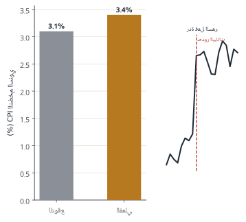
الشكل 13.1 — الفرق بين المتوقع والفعلي، ورد فعل السعر بعد الإعلان
البنوك المركزية مسؤولة عن إدارة السياسة النقدية لدولها، وتشمل مهامها الرئيسية: الحفاظ على استقرار الأسعار (مكافحة التضخم المفرط)، دعم التوظيف الكامل، والحفاظ على استقرار النظام المالي. قراراتها من أكثر الأحداث تأثيرًا على أسواق العملات والسندات والأسهم عالميًا.
| البنك | الدولة/المنطقة | العملة المرتبطة |
|---|---|---|
| الاحتياطي الفيدرالي (Fed) | الولايات المتحدة | الدولار الأمريكي (USD) |
| البنك المركزي الأوروبي (ECB) | منطقة اليورو | اليورو (EUR) |
| بنك إنجلترا (BoE) | المملكة المتحدة | الجنيه الإسترليني (GBP) |
| بنك اليابان (BoJ) | اليابان | الين الياباني (JPY) |
| البنك الوطني السويسري (SNB) | سويسرا | الفرنك السويسري (CHF) |
| بنك كندا (BoC) | كندا | الدولار الكندي (CAD) |
| بنك الاحتياطي الأسترالي (RBA) | أستراليا | الدولار الأسترالي (AUD) |
عندما يرفع بنك مركزي أسعار الفائدة، فإنه عادة يجعل عملته أكثر جاذبية لرؤوس الأموال الباحثة عن عائد أعلى، مما يدعم قيمتها نسبيًا (مع مراعاة عوامل أخرى مصاحبة). خفض الفائدة يعمل بالاتجاه المعاكس عادة.
كثير من تأثير قرارات البنوك المركزية على الأسواق لا يأتي من القرار الحالي نفسه (والذي يكون متوقعًا غالبًا)، بل من نبرة التصريحات المرافقة له بخصوص القرارات المستقبلية. تصريح "متشدد" (Hawkish) يشير لاحتمال رفع فائدة أو تشديد إضافي، بينما تصريح "متساهل" (Dovish) يشير لاحتمال تيسير إضافي.
استقلالية البنك المركزي عن التدخل السياسي المباشر تُعتبر عاملًا مهمًا لثقة الأسواق في مصداقية سياسته النقدية؛ أي شك في هذه الاستقلالية قد يخلق تقلبات إضافية غير مرتبطة مباشرة بالبيانات الاقتصادية نفسها.
راجع آخر قرار سعر فائدة صادر عن أحد البنوك المركزية الكبرى، وحدد: هل كان القرار متوقعًا؟ وما كانت نبرة التصريحات المرافقة (متشددة أم متساهلة)؟ وكيف تفاعلت العملة المرتبطة به؟
يعلن بنك مركزي عن إبقاء سعر الفائدة دون تغيير كما كان متوقعًا تمامًا، لكن خلال المؤتمر الصحفي يستخدم المحافظ لغة أكثر تشددًا من المتوقع بخصوص القرارات القادمة، مشيرًا لاحتمال رفع الفائدة في الاجتماع التالي. رغم ثبات القرار الحالي، ترتفع العملة المرتبطة بشكل حاد بسبب التوجيه المستقبلي المتشدد وحده.
يوضّح الشكل 14.1 هذا المثال:
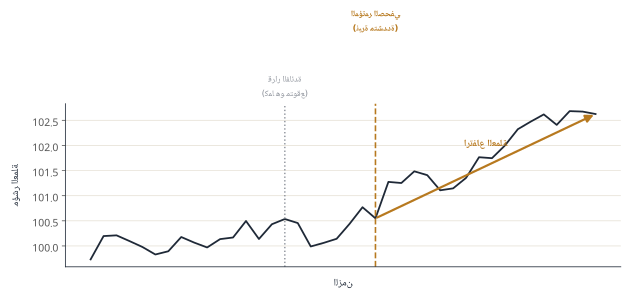
الشكل 14.1 — رد فعل العملة عند قرار الفائدة مقارنة بالمؤتمر الصحفي المتشدد
سعر الفائدة هو تكلفة اقتراض المال، ويُحدَّد أساسًا عبر "سعر الفائدة الأساسي" الذي يضعه البنك المركزي، والذي تُبنى عليه أسعار الفائدة الأخرى في الاقتصاد (قروض، ودائع، رهون عقارية).
| النوع | الوصف |
|---|---|
| السعر الاسمي (Nominal Rate) | السعر المعلن دون تعديل للتضخم |
| السعر الحقيقي (Real Rate) | السعر الاسمي مطروحًا منه معدل التضخم |
| سعر الفائدة قصير الأجل | يحدده البنك المركزي مباشرة |
| سعر الفائدة طويل الأجل | يتحدد أساسًا في أسواق السندات بناءً على توقعات النمو والتضخم المستقبلية |
ارتفاع سعر الفائدة النسبي لدولة ما (مقارنة بدول أخرى) يجذب عادة تدفقات رأسمالية باحثة عن عائد أعلى (تجارة الفارق – Carry Trade)، مما يدعم عملتها. لذلك يهتم متداولو الفوركس بشكل خاص بفروق أسعار الفائدة بين الدول (Interest Rate Differentials) وليس فقط بمستوى الفائدة المطلق في دولة واحدة.
ارتفاع أسعار الفائدة يرفع تكلفة الاقتراض على الشركات، ويقلل القيمة الحالية للأرباح المستقبلية المخصومة (كما في نماذج DCF)، مما يضغط عادة على تقييمات الأسهم، خصوصًا أسهم النمو التي تعتمد أرباحها المتوقعة على المستقبل البعيد.
تُسعِّر الأسواق (خصوصًا أسواق العقود الآجلة على الفائدة) توقعاتها لقرارات الفائدة القادمة قبل حدوثها بوقت طويل. لذلك، كما أُشير في الفصل 14، فإن رد فعل السوق يعتمد على مدى مطابقة القرار الفعلي لهذه التوقعات المسعّرة مسبقًا، لا على القرار المطلق وحده.
يوضح منحنى العائد العلاقة بين عوائد السندات الحكومية ومدة استحقاقها. في الحالة الطبيعية، ترتفع العوائد كلما طالت مدة السند. عندما "ينعكس" هذا المنحنى (تصبح عوائد السندات قصيرة الأجل أعلى من طويلة الأجل)، يُعتبر ذلك تاريخيًا إشارة تحذيرية قوية على احتمال ركود اقتصادي قادم.
قارن سعر الفائدة الحالي في دولتين ذواتي عملة متداولة معًا (مثل الولايات المتحدة ومنطقة اليورو)، وتتبع كيف تحرك زوج عملتيهما خلال آخر ستة أشهر بالتوازي مع تغير هذا الفارق.
عندما يبدأ بنك مركزي دورة رفع فائدة متتالية بينما يبقي بنك مركزي آخر (منافس تجاري رئيسي) فائدته دون تغيير، يتوسع الفارق بين الفائدتين تدريجيًا، ويستمر زوج العملتين في اتجاه صاعد ثابت لصالح العملة ذات الفائدة الأعلى طوال هذه الفترة، رغم التقلبات قصيرة الأمد اليومية.
يوضّح الشكل 15.1 هذا المثال:
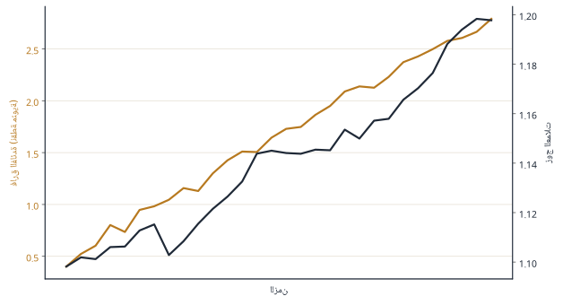
الشكل 15.1 — فارق أسعار الفائدة بين دولتين مقابل حركة زوج عملتيهما
التضخم هو الارتفاع المستمر في المستوى العام لأسعار السلع والخدمات خلال فترة زمنية، مما يقلل القوة الشرائية للعملة. معظم البنوك المركزية الكبرى تستهدف معدل تضخم سنوي يقارب 2% كهدف "صحي" يوازن بين النمو الاقتصادي واستقرار الأسعار.
| النوع | السبب الرئيسي |
|---|---|
| تضخم جذب الطلب (Demand-Pull) | زيادة الطلب الكلي عن قدرة الاقتصاد على العرض |
| تضخم دفع التكلفة (Cost-Push) | ارتفاع تكاليف الإنتاج (مواد خام، أجور) وانتقالها للمستهلك |
| التضخم المستورد | ارتفاع أسعار الواردات بسبب ضعف العملة المحلية |
يُقاس التضخم أساسًا عبر مؤشر أسعار المستهلك (CPI)، الذي يتتبع تغير أسعار سلة سلع وخدمات تمثل نمط استهلاك الأسرة النموذجية. يُنشر عادة كنسبة شهرية ونسبة سنوية.
يقيس تغير الأسعار عند مستوى الإنتاج (قبل وصولها للمستهلك النهائي)، ويُعتبر مؤشرًا مبكرًا (Leading Indicator) لتضخم المستهلك المستقبلي، لأن ارتفاع تكاليف الإنتاج ينتقل عادة إلى المستهلك خلال الأشهر التالية.
معظم البنوك المركزية الحديثة تتبنى سياسة "استهداف التضخم" (Inflation Targeting)، حيث تُعدّل أسعار الفائدة صعودًا عند تجاوز التضخم الهدف المحدد (عادة 2%)، وهبوطًا عند تراجعه بشكل كبير عن هذا الهدف.
عند صدور بيان CPI أعلى من المتوقع، تميل الأسواق لتسعير احتمال تشديد نقدي أقرب (رفع فائدة أو تأجيل خفضها)، مما يدعم العملة المحلية عادة ويضغط على الأسهم. العكس يحدث عادة عند بيان أقل من المتوقع.
راجع آخر ثلاثة بيانات CPI صادرة عن اقتصاد رئيسي، وسجّل التضخم الإجمالي والأساسي لكل منها، وحدد الاتجاه العام (تسارع أم تباطؤ).
يصدر بيان تضخم إجمالي أقل من المتوقع، لكن التضخم الأساسي (الذي يستبعد الطاقة والغذاء) يأتي أعلى من المتوقع بسبب ارتفاع بند الخدمات تحديدًا. المتداول الذي ينظر فقط للرقم الإجمالي قد يستنتج تراجع الضغوط التضخمية، بينما المتداول الذي يفحص التفاصيل يدرك أن الضغوط الأساسية ما تزال مرتفعة، مما قد يبقي احتمال تشديد نقدي إضافي قائمًا.
يوضّح الشكل 16.1 هذا المثال:
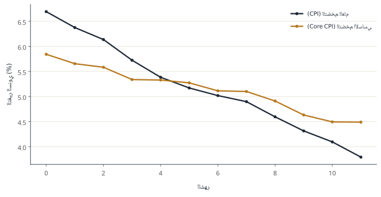
الشكل 16.1 — مسار التضخم الإجمالي مقابل التضخم الأساسي عبر عدة أشهر
سوق العمل أحد أهم المقاييس على صحة الاقتصاد، لأنه يؤثر مباشرة على الاستهلاك (المحرك الأكبر لمعظم الاقتصادات الكبرى)، ويُعتبر أحد الهدفين الرئيسيين لمعظم البنوك المركزية إلى جانب استقرار الأسعار.
يُنشر شهريًا في الولايات المتحدة، ويقيس عدد الوظائف المستحدثة في القطاعات غير الزراعية خلال الشهر السابق. يُعتبر من أكثر البيانات الاقتصادية تحريكًا للأسواق عالميًا نظرًا لحجم الاقتصاد الأمريكي وتأثيره الممتد لكل الأصول المرتبطة بالدولار.
نسبة الأفراد العاطلين عن العمل (ويبحثون عنه فعليًا) من إجمالي القوى العاملة. معدل بطالة منخفض يشير لسوق عمل قوي، لكنه قد يثير أيضًا مخاوف تضخمية إذا رافقه ارتفاع سريع جدًا في الأجور.
مقياس مهم لضغوط التضخم القادمة من جانب الأجور؛ ارتفاعه بشكل أسرع من الإنتاجية قد يترجم لاحقًا لارتفاع أسعار المستهلك، لذا يُراقَب هذا الرقم بعناية موازية لرقم الوظائف نفسه.
نسبة الأفراد في سن العمل الذين يعملون فعليًا أو يبحثون عن عمل. انخفاض هذا المعدل رغم انخفاض معدل البطالة قد يعني ببساطة أن أفرادًا انسحبوا من سوق العمل تمامًا، وليس أن الوضع الاقتصادي بالضرورة أفضل مما يبدو من رقم البطالة وحده.
نظرًا للتقلب الشديد المصاحب لصدور NFP، يُنصح غالبًا بالحذر من الدخول قبل صدور البيان مباشرة، وانتظار استقرار نسبي في الاتجاه بعد الإعلان بدقائق قليلة، بدلًا من محاولة توقع اتجاه الحركة الأولى شديدة التقلب.
راجع آخر تقرير NFP صادر، وسجّل: رقم الوظائف المستحدثة، معدل البطالة، ومتوسط الأجر بالساعة، وقارن كل رقم بتوقعات الاقتصاديين.
يصدر تقرير NFP برقم وظائف مستحدثة أعلى بكثير من المتوقع، مما يدفع الدولار للارتفاع الفوري. لكن خلال الدقائق التالية، يتضح أن متوسط الأجر بالساعة جاء أقل من المتوقع، مما يقلل مخاوف الضغوط التضخمية من جانب الأجور. نتيجة لذلك، يتراجع جزء من الارتفاع الأولي للدولار خلال الساعة التالية، مما يوضح أهمية النظر لكل مكونات التقرير معًا وليس فقط للعنوان الرئيسي.
يوضّح الشكل 17.1 هذا المثال:
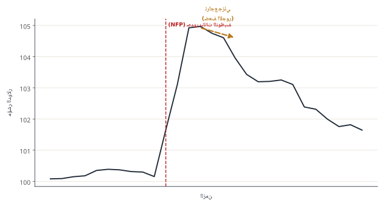
الشكل 17.1 — حركة الدولار حول صدور تقرير NFP، مع تصحيح جزئي بعد تفاصيل الأجور
الناتج المحلي الإجمالي (GDP) هو القيمة الإجمالية لكل السلع والخدمات النهائية المنتجة داخل حدود دولة معينة خلال فترة زمنية محددة (عادة ربع سنوي أو سنوي)، ويُعتبر المقياس الأشمل لحجم النشاط الاقتصادي.
يُحسب الناتج المحلي الإجمالي وفق المعادلة: GDP = الاستهلاك + الاستثمار + الإنفاق الحكومي + (الصادرات − الواردات). تحليل أي من هذه المكونات ينمو أو يتراجع يعطي صورة أدق من الرقم الإجمالي وحده.
| المكوّن | الوصف |
|---|---|
| الاستهلاك الخاص | إنفاق الأسر على السلع والخدمات، وعادة أكبر مكوّن في معظم الاقتصادات |
| الاستثمار | إنفاق الشركات على الأصول الإنتاجية والمخزون |
| الإنفاق الحكومي | مشتريات واستثمارات القطاع الحكومي |
| صافي الصادرات | الصادرات مطروحًا منها الواردات |
يُنشر عادة كنسبة نمو ربع سنوية (مقارنة بالربع السابق) ونسبة سنوية (مقارنة بنفس الربع من العام الماضي). النمو السلبي لربعين متتاليين يُعتبر تعريفًا تقنيًا شائعًا لـ"الركود الفني" (Technical Recession).
يُنشر الرقم الأولي عادة كتقدير أولي (Advance/Preliminary) يخضع لمراجعات لاحقة (Revised/Final) مع توفر بيانات أدق. الأسواق تتفاعل عادة بقوة مع كل نسخة من هذه النسخ الثلاث، وليس فقط مع الرقم الأولي.
بما أن بيانات النمو تُنشر بتكرار أقل (ربع سنوي) وغالبًا ما تكون توقعاتها مسعّرة مسبقًا بدرجة عالية عبر بيانات شهرية أخرى (توظيف، مبيعات تجزئة، مؤشرات مديري المشتريات)، فإن رد الفعل السعري على GDP غالبًا ما يكون أقل حدة من NFP أو CPI، إلا في حالات المفاجآت الكبيرة أو الانتقال لركود فني غير متوقع.
راجع آخر تقرير نمو ربع سنوي لاقتصاد رئيسي، وحدد أي المكونات (استهلاك، استثمار، إنفاق حكومي، صافي صادرات) ساهم أكثر في نتيجة النمو الإجمالية.
يصدر تقرير نمو ربع سنوي أعلى قليلًا من المتوقع، لكن التفصيل يُظهر أن معظم النمو جاء من تراكم مخزون الشركات (وليس من استهلاك حقيقي متنامٍ من الأسر). هذا يثير تساؤلات لدى المحللين حول استدامة هذا النمو في الربع القادم، مما يفسر ردة فعل سعرية معتدلة رغم أن الرقم الرئيسي بدا إيجابيًا للوهلة الأولى.
يوضّح الشكل 18.1 هذا المثال:
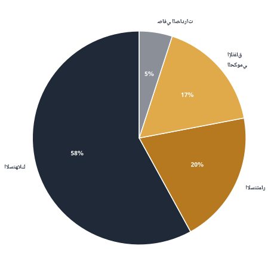
الشكل 18.1 — مساهمة كل مكوّن في نمو الناتج المحلي الإجمالي
يقيس مؤشر ثقة المستهلك مدى تفاؤل الأسر تجاه الوضع الاقتصادي الحالي والمستقبلي، عبر استطلاعات دورية. ارتفاع الثقة يترافق عادة مع زيادة الإنفاق الاستهلاكي لاحقًا (وهو المحرك الأكبر لمعظم الاقتصادات)، بينما انخفاضها ينذر بتباطؤ محتمل في الاستهلاك.
مؤشر مواز يقيس تفاؤل قادة الشركات تجاه ظروف الأعمال، ويؤثر على قرارات التوظيف والاستثمار المستقبلية. ثقة الأعمال المرتفعة تُعتبر إشارة مبكرة على نمو محتمل في الاستثمار والتوظيف خلال الأشهر القادمة.
مؤشر مديري المشتريات (PMI) من أهم المؤشرات "الاستشرافية" (Leading Indicators)، لأنه يُبنى على استطلاع مباشر لمديري الشراء في الشركات حول الطلبات الجديدة، الإنتاج، والتوظيف. القراءة فوق 50 تشير لتوسع النشاط الاقتصادي، وتحتها تشير لانكماشه. مؤشرات ISM الأمريكية (للتصنيع والخدمات) من أكثر نسخ PMI متابعة عالميًا.
| مستوى PMI | الدلالة |
|---|---|
| أعلى من 50 | توسع في النشاط الاقتصادي |
| أقل من 50 | انكماش في النشاط الاقتصادي |
| قريب من 50 | استقرار أو تباطؤ في وتيرة التغير |
نظرًا لطبيعتها الاستشرافية، تُستخدم بيانات الثقة والـ PMI غالبًا لتوقع اتجاه بيانات أكثر تأخرًا (مثل التوظيف والناتج المحلي الإجمالي) قبل صدورها رسميًا، مما يجعلها أدوات مفيدة لبناء انحياز مبكر ضمن التحليل الأساسي.
راجع آخر ثلاث قراءات لمؤشر ISM للتصنيع أو الخدمات في اقتصاد رئيسي، وحدد إن كان الاتجاه العام نحو التوسع أم الانكماش.
يتراجع مؤشر PMI للتصنيع تدريجيًا لثلاثة أشهر متتالية ليقترب من مستوى 50 قادمًا من مستويات توسع قوية سابقًا. بعد شهرين من هذا التراجع التدريجي، يصدر تقرير GDP الفصلي بنمو أضعف من المتوقع بوضوح — مؤكدًا أن مؤشر PMI كان قد أعطى إشارة مبكرة لهذا التباطؤ قبل ظهوره رسميًا في بيانات النمو.
يوضّح الشكل 19.1 هذا المثال:
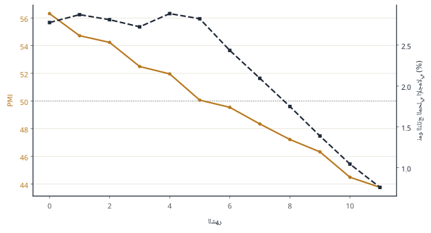
الشكل 19.1 — تراجع PMI تدريجيًا قبل صدور بيان نمو ضعيف
الفرق بين قيمة صادرات دولة وواردتها من السلع خلال فترة محددة. فائض تجاري (صادرات أكبر من واردات) يدعم العملة المحلية عادة (طلب أجنبي أكبر عليها لشراء الصادرات)، بينما عجز تجاري يعمل بالاتجاه المعاكس.
مقياس أوسع من الميزان التجاري وحده، يشمل أيضًا تدفقات الدخل (كأرباح الاستثمارات الأجنبية) والتحويلات (كتحويلات العمالة في الخارج). عجز الحساب الجاري المزمن قد يشير لضعف تنافسي هيكلي في الاقتصاد يحتاج تمويلًا مستمرًا من الخارج.
في المقابل، يقيس حساب رأس المال تدفقات الاستثمار الداخلة والخارجة (استثمار مباشر، محفظة مالية). دولة ذات عجز في الحساب الجاري تحتاج عادة لفائض مقابل في حساب رأس المال (تدفقات استثمارية داخلة) لتمويل ذلك العجز، وإلا واجهت ضغطًا على عملتها.
بيانات الميزان التجاري عادة أقل تأثيرًا لحظيًا من بيانات مثل NFP أو CPI، لكنها مهمة لفهم الاتجاه الهيكلي طويل المدى لعملة معينة، خصوصًا للدول التي تعتمد اقتصاداتها بشكل كبير على الصادرات (كالسلع الأولية أو التصنيع).
راجع آخر بيانات الميزان التجاري لدولة تعتمد اقتصادها على الصادرات (مثل دولة نفطية أو تصنيعية كبرى)، وتتبع العلاقة التاريخية التقريبية بين اتساع الفائض/العجز التجاري وحركة عملتها على المدى المتوسط.
تسجل دولة معتمدة على صادرات الطاقة فائضًا تجاريًا متزايدًا مع ارتفاع أسعار الطاقة عالميًا. على مدى عدة أشهر، تدعم هذه التدفقات الدولارية الداخلة (من عائدات التصدير) عملتها المحلية تدريجيًا، حتى في ظل عوامل أخرى محايدة نسبيًا كأسعار الفائدة المحلية.
يوضّح الشكل 20.1 هذا المثال:
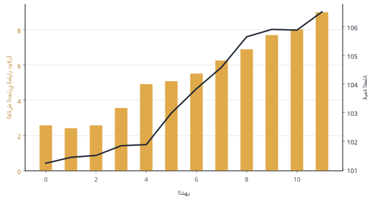
الشكل 20.1 — الفائض التجاري مقابل قيمة العملة المحلية خلال نفس الفترة
عند تحليل الأسهم تحديدًا (بخلاف العملات أو السلع)، يضيف التحليل الأساسي طبقة إضافية: دراسة البيانات المالية للشركة ذاتها لتقدير قيمتها العادلة، عبر ثلاث قوائم رئيسية.
توضح إيرادات الشركة ومصاريفها وصافي ربحها خلال فترة محددة. أهم البنود: الإيرادات، تكلفة البضاعة المباعة، الربح الإجمالي، المصاريف التشغيلية، وصافي الربح النهائي (Net Income).
تعكس المركز المالي للشركة في لحظة زمنية محددة، وفق المعادلة: الأصول = الخصوم + حقوق الملكية. تحليلها يساعد على تقييم مدى استدانة الشركة وقدرتها على الوفاء بالتزاماتها.
تُظهر حركة النقد الفعلي داخل وخارج الشركة عبر ثلاثة أنشطة: التشغيلية، الاستثمارية، والتمويلية. شركة قد تُظهر ربحًا محاسبيًا في قائمة الدخل لكنها تعاني من تدفق نقدي تشغيلي ضعيف — وهذا التناقض يستحق الانتباه دومًا.
| النسبة | الصيغة | الدلالة |
|---|---|---|
| مضاعف الربحية (P/E) | سعر السهم ÷ ربح السهم | كم يدفع المستثمر مقابل كل وحدة ربح |
| القيمة الدفترية (P/B) | سعر السهم ÷ القيمة الدفترية للسهم | تقييم السهم نسبة لصافي أصوله الدفترية |
| نسبة الدين إلى حقوق الملكية | إجمالي الديون ÷ حقوق الملكية | مستوى الاستدانة والمخاطرة المالية |
| هامش الربح الصافي | صافي الربح ÷ الإيرادات | كفاءة تحويل الإيرادات إلى أرباح فعلية |
تصدر الشركات المدرجة تقارير أرباح ربع سنوية، وتقارن الأسواق النتائج الفعلية بتوقعات المحللين (تمامًا كما في البيانات الاقتصادية الكلية). مفاجأة إيجابية في الأرباح مصحوبة بتوقعات مستقبلية (Guidance) قوية عادة ما تدفع السهم صعودًا بقوة، والعكس صحيح.
اختر شركة مدرجة تعرفها جيدًا، وراجع آخر تقرير أرباح لها: هل تجاوزت توقعات المحللين؟ وكيف تفاعل سعر سهمها في اليوم التالي؟
تُعلن شركة كبرى عن أرباح ربع سنوية تتجاوز توقعات المحللين بوضوح، لكنها تخفض توقعاتها (Guidance) للربع القادم بسبب مخاوف من تباطؤ الطلب. رغم "التغلب" على توقعات الربع الحالي، ينخفض السهم بشكل حاد في الجلسة التالية، لأن السوق يعطي وزنًا أكبر للتوقعات المستقبلية من النتائج الماضية.
يوضّح الشكل 21.1 هذا المثال:
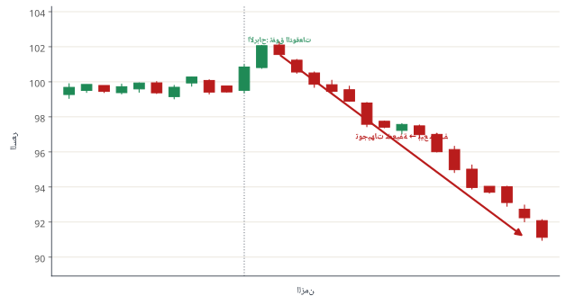
الشكل 21.1 — رد فعل السهم بعد تجاوز التوقعات مع توجيه مستقبلي أضعف
التقويم الاقتصادي هو الأداة العملية التي تجمع كل المفاهيم السابقة في هذا الجزء من الكتاب: جدول زمني منظم لمواعيد صدور كل البيانات الاقتصادية (تضخم، توظيف، فائدة، نمو...) لكل الدول، مصنّفة عادة حسب درجة تأثيرها المتوقع (منخفض، متوسط، مرتفع).
الأحداث التي تستحق أعلى درجة انتباه عادة: قرارات أسعار الفائدة، تقارير التضخم (CPI)، تقارير التوظيف (NFP)، ومؤتمرات محافظي البنوك المركزية الصحفية. هذه الأحداث هي غالبًا مصدر شموع IFC وBCD التي نوقشت في الفصل 9.
| الاستراتيجية | الوصف |
|---|---|
| التداول اللحظي عند الصدور | الدخول مباشرة عند صدور البيان بناءً على المفاجأة مقارنة بالتوقعات؛ مخاطرة عالية جدًا بسبب اتساع فروق الأسعار وتقلب السيولة |
| انتظار الاستقرار | ترك الدقائق الأولى شديدة التقلب تمر، ثم الدخول بعد تشكل اتجاه أوضح واستقرار نسبي |
| التموضع المسبق | بناء انحياز قبل الحدث بناءً على التوقعات والسياق الأوسع، مع إدارة حجم مركز أصغر تحسبًا للتقلب |
يُنصح المتداولون الأقل خبرة عادة بتجنب فتح صفقات جديدة خلال الدقائق المحيطة مباشرة بالأحداث عالية التأثير، والاكتفاء بمراقبة كيفية تفاعل السعر مع البيان (خصوصًا العلاقة بين الرقم الفعلي والمتوقع، كما أُشير مرارًا في هذا الجزء)، قبل اتخاذ أي قرار.
قواعد عملية أساسية:
راجع التقويم الاقتصادي للأسبوع القادم، وحدد الأحداث عالية التأثير المتعلقة بالأصول التي تتداولها، وخطط مسبقًا كيف ستدير حجم مراكزك القائمة حولها.
قبل صدور قرار سعر فائدة متوقع بشدة أن يكون "بلا تغيير"، يقلل متداول حجم مركز قائم لديه بشكل استباقي تحسبًا لأي مفاجأة في نبرة التصريحات المرافقة (كما نوقش في الفصل 14). فعليًا، يخرج البيان كما كان متوقعًا في القرار نفسه، لكن نبرة متشددة غير متوقعة تحرك السوق بقوة؛ نظرًا لتقليل حجم المركز مسبقًا، تكون الخسارة المؤقتة (أو الفرصة الضائعة) محدودة ومُدارة، بدلًا من التعرض لتقلب كامل بحجم مركز غير مُعدَّل.
يوضّح الشكل 22.1 هذا المثال:
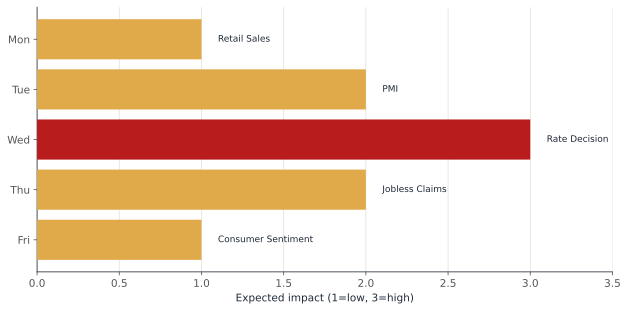
الشكل 22.1 — مستوى التأثير المتوقع للأحداث الاقتصادية عبر أيام الأسبوع
التحليل الفني هو دراسة حركة السعر التاريخية (وأحيانًا الحجم المصاحب لها) بهدف تحديد أنماط متكررة يمكن استخدامها لتوقع الاحتمالات المستقبلية للسعر، وتحديد نقاط دخول وخروج دقيقة. على عكس التحليل الأساسي الذي يسأل "لماذا"، يركز التحليل الفني على "متى" و"أين".
يقوم التحليل الفني على ثلاث افتراضات جوهرية:
تُعد نظرية داو (Dow Theory) الأساس التاريخي لمعظم مبادئ التحليل الفني الحديث، ومن أهم مبادئها: السوق له ثلاثة اتجاهات متزامنة (أساسي، ثانوي، وصغير)، والاتجاه يبقى قائمًا حتى تظهر إشارة انعكاس واضحة، وحجم التداول يجب أن يؤكد الاتجاه.
كما نوقش في الفصل 13، الأداتان متكاملتان لا متنافستان. في إطار "التحليل الثلاثي"، يُستخدم التحليل الفني عادة كالطبقة الأخيرة والأكثر دقة في عملية اتخاذ القرار، بعد أن يحدد التحليل الأساسي الانحياز العام، وتحدد مفاهيم SMC المناطق المؤسسية المهمة.
سيتم التفصيل الكامل في الفصل التالي؛ كمقدمة: المخططات الخطية (Line)، الشريطية (Bar)، الشموع اليابانية (Candlestick)، وأنواع أخرى متخصصة مثل رينكو وكاغي والنقاط والأشكال.
نفس مبدأ الأطر الزمنية المتعددة الذي نوقش في الفصل 10 ضمن SMC ينطبق هنا تمامًا: الأطر الكبرى لتحديد الاتجاه العام، والأطر الأصغر لتوقيت الدخول والخروج الدقيق.
اختر أصلًا ماليًا، وحدد اتجاهه الأساسي والثانوي وفقًا لمبادئ نظرية داو الثلاثة المذكورة أعلاه.
يظهر أصل مالي اتجاهًا صاعدًا أساسيًا واضحًا على الفريم الأسبوعي، بينما يمر بتصحيح ثانوي هابط على الفريم اليومي لعدة أسابيع. المتداول الذي يفهم الفرق بين الاتجاهين (وفق نظرية داو) لا يفزع من التصحيح الثانوي، بل يعتبره فرصة محتملة للدخول مع الاتجاه الأساسي الأكبر عند وصول التصحيح لمنطقة اهتمام مناسبة.
يوضّح الشكل 23.1 هذا المثال:
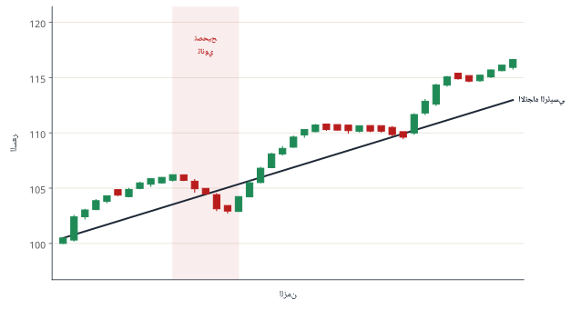
الشكل 23.1 — اتجاه أساسي صاعد مع تصحيح ثانوي وفق نظرية داو
أبسط أنواع المخططات، تربط بين أسعار الإغلاق فقط عبر خط مستمر. مفيدة لرؤية الاتجاه العام بوضوح دون تشتت بصري، لكنها تفقد معلومات مهمة (الافتتاح، الأعلى، الأدنى) داخل كل فترة.
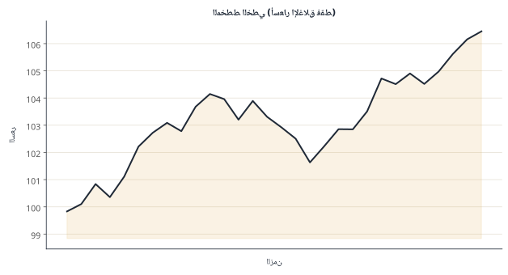
الشكل 24.3 — مخطط خطي يعرض أسعار الإغلاق فقط
كل شريط يمثل فترة زمنية ويعرض أربع نقاط: الافتتاح (Open)، الأعلى (High)، الأدنى (Low)، والإغلاق (Close)، عبر خط رأسي مع شرطتين أفقيتين صغيرتين (يسار للافتتاح، يمين للإغلاق).
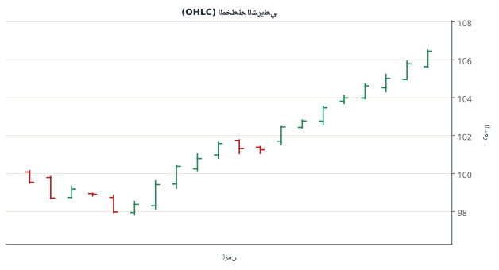
الشكل 24.2 — مخطط شريطي (Bar Chart) يعرض بيانات OHLC الكاملة لكل فترة
الأكثر استخدامًا حاليًا في التحليل الفني وSMC معًا، لأنها تعرض نفس بيانات OHLC لكن بطريقة بصرية أوضح: "جسم" الشمعة يمثل المسافة بين الافتتاح والإغلاق (ملوّن حسب اتجاه الحركة)، و"الفتائل" (Wicks/Shadows) تمثل أعلى وأدنى نقطة وصل إليها السعر خلال الفترة.
| العنصر | الدلالة |
|---|---|
| جسم الشمعة الصاعد (عادة أخضر/أبيض) | الإغلاق أعلى من الافتتاح |
| جسم الشمعة الهابط (عادة أحمر/أسود) | الإغلاق أدنى من الافتتاح |
| الفتيل العلوي | أعلى سعر تم الوصول إليه خلال الفترة |
| الفتيل السفلي | أدنى سعر تم الوصول إليه خلال الفترة |
نسخة معدّلة رياضيًا من الشموع اليابانية تُنعّم حركة السعر (كل شمعة تُحسب جزئيًا من متوسط الشمعة السابقة)، مما يسهل رؤية الاتجاه العام لكنه يخفي تفاصيل السعر الفعلي الدقيقة (لا تصلح وحدها لتحديد كتل الطلب أو FVG بدقة، لأنها لا تعكس الأسعار الحقيقية للتنفيذ).
أنواع متخصصة تُبنى على حركة السعر فقط بغض النظر عن الزمن (بعكس كل الأنواع السابقة التي تُبنى على فترات زمنية ثابتة)، وتُستخدم غالبًا لتصفية الضوضاء قصيرة المدى والتركيز على الاتجاهات الجوهرية فقط. أقل شيوعًا في تطبيقات SMC الحديثة نظرًا لغياب مفهوم "الزمن" الذي تعتمد عليه مفاهيم مثل كسر الهيكل بشكل دقيق.
يمكن بناء أي من الأنواع أعلاه (باستثناء رينكو والنقاط والأشكال) على أي إطار زمني: من 1 دقيقة وحتى الشهري، حسب أفق التداول المستهدف (مضاربة يومية، تداول متأرجح، أو استثمار طويل الأجل).
عنصر إضافي مهم عند إعداد أي مخطط هو اختيار طريقة توزيع المحور السعري (المحور الرأسي):
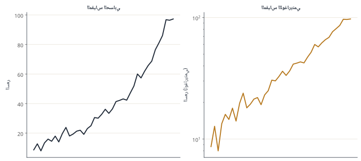
الشكل 24.4 — نفس حركة السعر معروضة على مقياس حسابي (يسار) ومقياس لوغاريتمي (يمين)
القاعدة العملية: استخدم المقياس الحسابي للتحليل قصير المدى ضمن نطاق سعري ضيق، وانتقل للمقياس اللوغاريتمي عند تحليل مخططات طويلة المدى (سنوات) أو أصول شهدت نموًا كبيرًا نسبيًا.
افتح نفس الأصل المالي على نوعين مختلفين من المخططات (شموع يابانية وهايكن أشي) لنفس الفترة الزمنية، ولاحظ الفروق البصرية بينهما عند نفس نقاط السعر.
يحاول متداول تحديد كتلة طلب دقيقة باستخدام مخطط هايكن أشي، لكنه يجد صعوبة في تحديد الشمعة المعاكسة الدقيقة الأخيرة قبل الاندفاعة، لأن جسم الشمعة "مُنعّم" رياضيًا ولا يعكس سعر الافتتاح والإغلاق الفعليين. عند التبديل لمخطط الشموع اليابانية القياسي لنفس الفترة، يصبح تحديد كتلة الطلب بدقة أوضح بكثير.
يوضّح الشكل 24.1 هذا المثال:
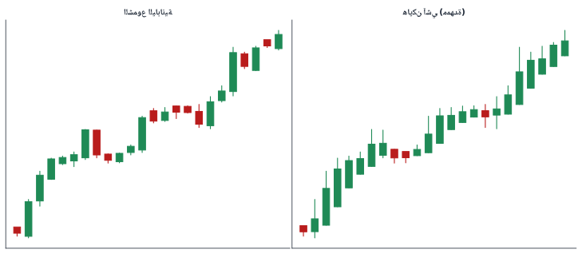
الشكل 24.1 — نفس الفترة الزمنية على مخطط شموع يابانية ومخطط هايكن أشي
كل شمعة تحكي قصة الصراع بين المشترين والبائعين خلال فترة زمنية محددة. حجم الجسم يعكس قوة الطرف المسيطر، بينما تعكس الفتائل مدى الرفض الذي واجهه السعر عند أقصى نقطة وصل إليها.
| النمط | الشكل | الدلالة |
|---|---|---|
| المطرقة (Hammer) | جسم صغير أعلى الشمعة، فتيل سفلي طويل | انعكاس صعودي محتمل بعد اتجاه هابط |
| الرجل المشنوق (Hanging Man) | نفس شكل المطرقة لكن بعد اتجاه صاعد | انعكاس هبوطي محتمل بعد اتجاه صاعد |
| النجمة الساقطة (Shooting Star) | جسم صغير أسفل الشمعة، فتيل علوي طويل | انعكاس هبوطي محتمل بعد اتجاه صاعد |
| المغزل (Spinning Top) | جسم صغير، فتيلان طويلان متقاربان | تردد وتوازن بين المشترين والبائعين |
| الدوجي (Doji) | جسم شبه معدوم (افتتاح ≈ إغلاق) | تردد شديد، وغالبًا نقطة تحول محتملة |
| ماروبوزو (Marubozu) | جسم كامل بلا فتائل تقريبًا | سيطرة كاملة لطرف واحد خلال الفترة |
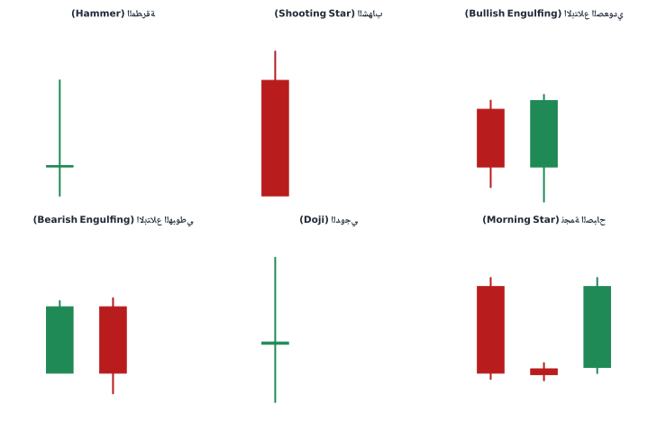
الشكل 25.1 — الأنماط الرئيسية للشموع اليابانية: المطرقة، النجمة الساقطة، الابتلاع الصعودي/الهبوطي، الدوجي، ونجمة الصباح
أنماط الشمعتين:
| النمط | الوصف | الدلالة |
|---|---|---|
| الابتلاع الصعودي (Bullish Engulfing) | شمعة صاعدة كبيرة تبتلع جسم شمعة هابطة سابقة بالكامل | انعكاس صعودي |
| الابتلاع الهبوطي (Bearish Engulfing) | شمعة هابطة كبيرة تبتلع جسم شمعة صاعدة سابقة بالكامل | انعكاس هبوطي |
| السحابة الداكنة (Dark Cloud Cover) | شمعة هابطة تفتح أعلى إغلاق سابق وتغلق داخل جسمه | انعكاس هبوطي |
| خط الاختراق (Piercing Line) | شمعة صاعدة تفتح أدنى إغلاق سابق وتغلق داخل جسمه | انعكاس صعودي |
أنماط الثلاث شموع:
| النمط | الوصف | الدلالة |
|---|---|---|
| نجمة الصباح (Morning Star) | هبوط، ثم تردد (دوجي/مغزل)، ثم صعود قوي | انعكاس صعودي |
| نجمة المساء (Evening Star) | صعود، ثم تردد، ثم هبوط قوي | انعكاس هبوطي |
| ثلاثة جنود بيض (Three White Soldiers) | ثلاث شموع صاعدة متتالية بأجسام كبيرة | استمرار/تأكيد صعودي قوي |
| ثلاثة غربان سود (Three Black Crows) | ثلاث شموع هابطة متتالية بأجسام كبيرة | استمرار/تأكيد هبوطي قوي |
بعض أنماط الشموع لا تشير لانعكاس بل لاستراحة مؤقتة قبل استئناف الاتجاه، مثل نمط "الثلاث طرق الصاعدة/الهابطة" (Rising/Falling Three Methods): حركة قوية، تليها عدة شموع تصحيحية صغيرة معاكسة، ثم استئناف الحركة الأصلية بقوة.
كل الأنماط المذكورة أعلاه يمكن تصنيفها إلى: صاعدة (تظهر في نهاية اتجاه هابط وتنذر بانعكاس صعودي)، هابطة (تظهر في نهاية اتجاه صاعد وتنذر بانعكاس هبوطي)، أو محايدة (تشير للتردد دون اتجاه واضح للانعكاس، كالدوجي والمغزل بمفردهما).
من المهم جدًا عدم التعامل مع أي نمط شمعة بمعزل عن سياقه: نفس نمط "المطرقة" يحمل دلالة مختلفة تمامًا إذا ظهر عند كتلة طلب SMC مقارنة بظهوره وسط نطاق عرضي بلا أي سياق. موثوقية الأنماط ترتفع بشكل ملحوظ عند اقترانها بمناطق اهتمام أخرى (دعم/مقاومة، كتلة طلب، مستوى فيبوناتشي).
القاعدة العملية: استخدم نمط الشمعة كـ"تأكيد أخير" عند الوصول لمنطقة اهتمام محددة مسبقًا (وليس كسبب مستقل للدخول). هذا يتماشى تمامًا مع منهجية "الإطار الكامل للدخول" التي نوقشت في الفصل 11 ضمن SMC.
راجع مخططًا يوميًا لأي أصل، وحدد خمسة أنماط شموع مختلفة (من الجدولين أعلاه)، وسجّل: هل ظهرت عند منطقة دعم/مقاومة أو كتلة طلب/عرض واضحة؟ وماذا حدث للسعر بعدها؟
يظهر نمط "مطرقة" واضح عند نهاية اتجاه هابط، لكنه يظهر وسط نطاق عرضي بلا أي دعم واضح خلفه — فيفشل الانعكاس المتوقع ويستمر الهبوط. بعد عدة أيام، يظهر نمط مطرقة مشابه تمامًا، لكن هذه المرة عند كتلة طلب صاعدة طازجة ومنطقة خصم عميقة (كما نوقش في الفصل 8) — وهذه المرة ينعكس السعر صعودًا بقوة. الفرق الجوهري بين الحالتين هو السياق، وليس شكل الشمعة نفسه.
يوضّح الشكل 25.2 هذا المثال:
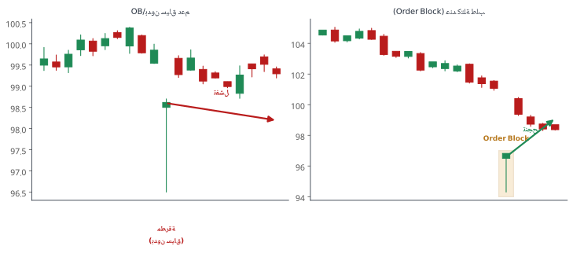
الشكل 25.2 — نمط المطرقة نفسه: يفشل بلا سياق، وينجح عند كتلة طلب
الدعم مستوى سعري يميل الطلب عنده لتجاوز العرض، مما يوقف الهبوط مؤقتًا أو دائمًا. كل ارتداد صاعد عن نفس المنطقة تقريبًا (كما عند النقاط A وB وC أدناه) يؤكد أنها منطقة دعم حقيقية:
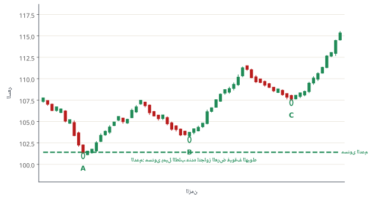
الشكل 26.7 — الدعم: مستوى يتكرر عنده الارتداد الصاعد (نقاط A، B، C)
المقاومة مستوى سعري يميل العرض عنده لتجاوز الطلب، مما يوقف الصعود — وهي الصورة المعاكسة تمامًا للدعم:
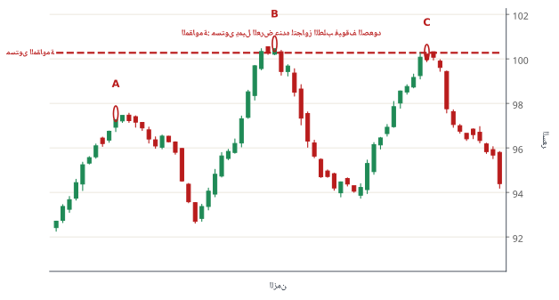
الشكل 26.8 — المقاومة: مستوى يتكرر عنده الارتداد الهابط (نقاط A، B، C)
هذان المفهومان من أقدم وأهم ركائز التحليل الفني، وهما يتقاطعان مباشرة مع مفهومي كتلة الطلب/العرض في SMC (الفصل 5) رغم اختلاف طريقة تحديدهما بدقة.
تُحدَّد عادة عبر أربع طرق رئيسية: القمم والقيعان التاريخية الواضحة، المتوسطات المتحركة الرئيسية، خطوط الاتجاه، والمستويات النفسية المستديرة:
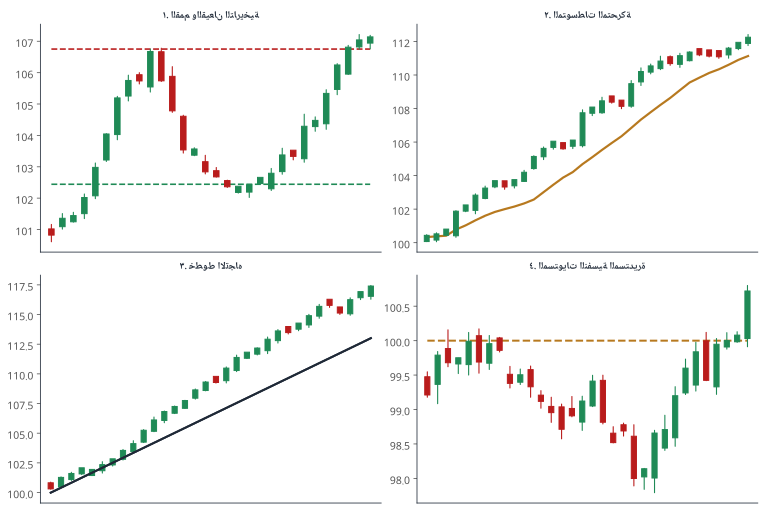
الشكل 26.9 — الطرق الأربع الأساسية لتحديد مستويات الدعم والمقاومة
أرقام مستديرة (مثل 1.2000 في أزواج العملات، أو 100 دولار لسهم ما) تجذب اهتمامًا نفسيًا جماعيًا من المتداولين، فيضع كثيرون أوامرهم المعلقة وأهدافهم عندها تحديدًا، مما يجعلها فعليًا مناطق سيولة مكثفة (بالمعنى الذي نوقش في الفصل 4).
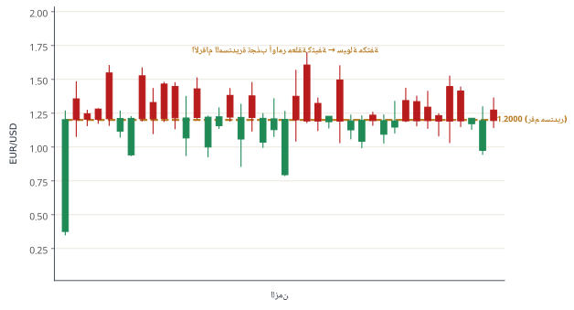
الشكل 26.10 — تكرار تفاعل السعر حول الرقم المستدير 1.2000 في زوج EUR/USD
عند اختراق مستوى مقاومة بشكل حاسم، يميل هذا المستوى للتحول إلى دعم عند إعادة اختباره لاحقًا من الأعلى (والعكس صحيح للدعم المكسور الذي يتحول لمقاومة). هذا المبدأ هو الأساس التقليدي لمفهوم "منطقة الفليب" في SMC (الفصل 9).
استراتيجيتان أساسيتان:
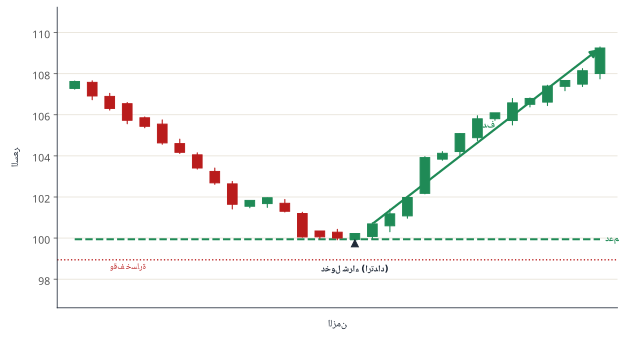
الشكل 26.11 — استراتيجية الارتداد: دخول شراء عند الدعم، مع وقف خسارة أسفله وهدف واضح
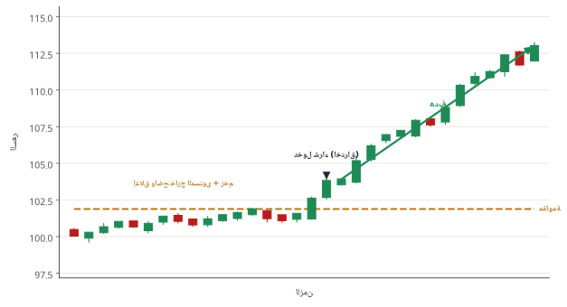
الشكل 26.12 — استراتيجية الاختراق: دخول شراء بعد إغلاق واضح فوق المقاومة بزخم
بعد أي اختراق، غالبًا ما يعاود السعر زيارة المستوى المكسور قبل استئناف حركته — وهذا ما يُعرف بـ"إعادة الاختبار" (Retest):
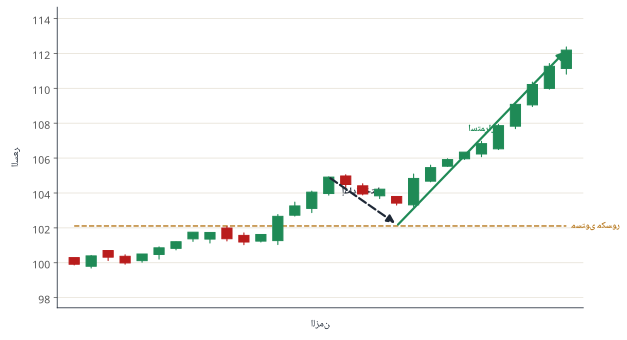
الشكل 26.5 — إعادة اختبار (Retest) للمستوى المكسور قبل استمرار الحركة
ومن أهم المهارات العملية هنا التمييز بين الاختراق الحقيقي والاختراق الكاذب:
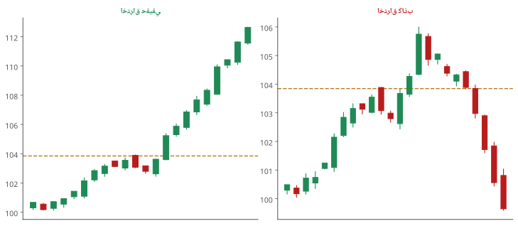
الشكل 26.6 — الاختراق الحقيقي (يستمر بعده الاتجاه) مقابل الاختراق الكاذب (يرتد السعر بسرعة)
خط مستقيم يربط بين قمتين متتاليتين (خط اتجاه هابط) أو قاعين متتاليين (خط اتجاه صاعد)، ويعمل كدعم أو مقاومة ديناميكية متحركة مع الزمن، بعكس المستويات الأفقية الثابتة.
يوضّح الشكل 26.3 الخطوات العملية الثلاث لرسم خط اتجاه صحيح:
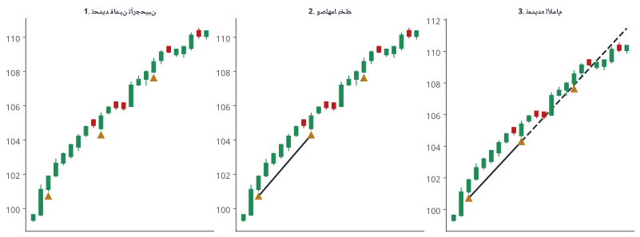
الشكل 26.3 — خطوات رسم خط الاتجاه: تحديد نقطتي تأرجح، ثم وصلهما، ثم امتداد الخط للمستقبل
عند رسم خط اتجاه مواز للخط الأصلي على الجانب الآخر من حركة السعر، يتشكل "قناة سعرية" تحصر تحرك السعر بين حدين متوازيين، وتُستخدم لتحديد مناطق شراء (عند الحد السفلي في قناة صاعدة) وبيع (عند الحد العلوي).
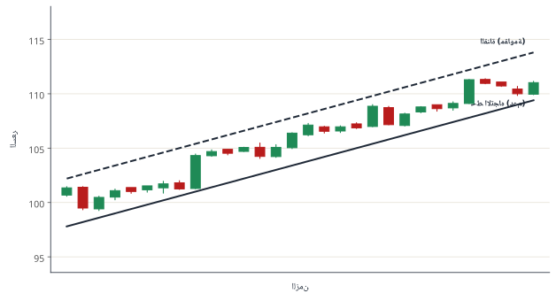
الشكل 26.2 — خط الاتجاه الصاعد كدعم، والقناة السعرية الموازية كمقاومة
ارسم خط اتجاه صاعد وخط اتجاه هابط على مخطط 4 ساعات لأصل يتحرك حاليًا ضمن نطاق واضح، وحدد أين تتقاطع هذه الخطوط مع مستويات أفقية سابقة.
يُكسر مستوى مقاومة أفقي ظل صامدًا لعدة أسابيع بإغلاق قوي وحجم تداول مرتفع. خلال الأيام التالية، يتصحح السعر ليعاود اختبار هذا المستوى نفسه من الأعلى، فيرتد عنه صعودًا بقوة — مؤكدًا تحوله من مقاومة إلى دعم (انعكاس الأدوار)، ومتطابقًا في الوقت نفسه مع منطقة فليب SMC عند نفس المستوى بالضبط.
يوضّح الشكل 26.1 هذا المثال:
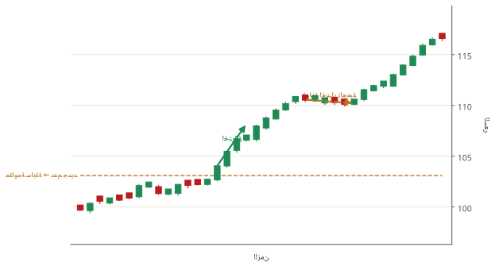
الشكل 26.1 — انعكاس الأدوار: مقاومة مكسورة تتحول إلى دعم جديد
الاتجاه هو الميل العام لحركة السعر خلال فترة زمنية محددة. تحديد الاتجاه بدقة هو نقطة الانطلاق لأي قرار تداولي، سواء في التحليل الفني التقليدي أو في قراءة هيكل السوق ضمن SMC (الفصل 3) — والمفهومان في جوهرهما يصفان نفس الظاهرة من زاويتين متكاملتين.
نفس التصنيف الثلاثي الذي نوقش في الفصل 3 (صاعد: HH-HL، هابط: LH-LL، عرضي: بلا اتجاه واضح ضمن نطاق) ينطبق هنا تمامًا بمصطلحات التحليل الفني التقليدي.
الشكل 27.2 — الاتجاه الصاعد (Uptrend): تتابع من القمم والقيعان الأعلى فالأعلى
الشكل 27.3 — الاتجاه الهابط (Downtrend): تتابع من القمم والقيعان الأدنى فالأدنى
الشكل 27.4 — الاتجاه العرضي (Sideways / Range): تذبذب السعر بين مستويي دعم ومقاومة أفقيين تقريبًا دون اتجاه واضح
يُحدَّد الاتجاه عبر: تسلسل القمم والقيعان (الطريقة الأساسية)، اتجاه خطوط الاتجاه المرسومة (الفصل 26)، واتجاه المتوسطات المتحركة الرئيسية.
عندما يتداول السعر باستمرار فوق متوسط متحرك رئيسي (كمتوسط 200 يوم) واتجاه هذا المتوسط نفسه صاعد، يُعتبر ذلك تأكيدًا إضافيًا على اتجاه صاعد عام. سيُفصَّل هذا أكثر في الفصل 29.
تشمل: تغيّر الشخصية (CHOCH، الفصل 3)، كسر خط اتجاه رئيسي بإغلاق واضح، تباعد سلبي مع مؤشرات الزخم (سيُشرح في الفصل 29)، وظهور أنماط انعكاسية كلاسيكية (الفصل 28).
القاعدة الذهبية الأشهر في التحليل الفني: "الاتجاه صديقك" (The Trend is Your Friend). إحصائيًا، فرص النجاح مع الاتجاه السائد أعلى عادة من محاولة توقع انعكاسه المبكر، خصوصًا للمتداولين الأقل خبرة.
حدد اتجاه ثلاثة أصول مختلفة حاليًا باستخدام تسلسل القمم والقيعان، ثم تحقق من توافق هذا التحديد مع اتجاه متوسط متحرك 200 فترة على نفس الفريم.
يتداول أصل مالي في اتجاه صاعد ثابت لعدة أشهر، فوق متوسطه المتحرك 200 يوم باستمرار. عندما يظهر أول تباعد سلبي بين السعر ومؤشر الزخم (قمة سعرية جديدة دون تأكيد مماثل من المؤشر)، يبدأ متداولون متمرسون بتشديد إدارة المخاطر على مراكزهم الصاعدة القائمة، دون الانقلاب فورًا للبيع، تحسبًا لبداية تصحيح أو انعكاس محتمل يتأكد لاحقًا عبر CHOCH فعلي على المخطط.
يوضّح الشكل 27.1 هذا المثال:
الشكل 27.1 — اتجاه صاعد مع تباعد سلبي بين السعر ومؤشر RSI
أنماط المخططات (Chart Patterns) هي أشكال هندسية متكررة تتشكل من حركة السعر عبر الزمن، وتُصنَّف عادة إلى فئتين رئيسيتين: أنماط انعكاسية (تنذر بنهاية الاتجاه الحالي)، وأنماط استمرارية (تنذر باستراحة مؤقتة قبل استئناف الاتجاه).
| النمط | الوصف | تحديد الهدف |
|---|---|---|
| القاع المزدوج (Double Bottom) | قاعان متقاربان بشكل حرف W | ارتفاع القمة الوسطى مضافًا لنقطة الاختراق |
| القاع الثلاثي (Triple Bottom) | ثلاثة قيعان متقاربة | مشابه للقاع المزدوج بثقة أعلى |
| الرأس والكتفين المقلوب (Inverse H&S) | قاع أوسط أعمق بين قاعين أعلى | ارتفاع الرأس عن خط الرقبة مضافًا لنقطة الاختراق |
| الوتد الهابط (Falling Wedge) | خطا اتجاه متقاربان بميل هابط | عرض بداية الوتد مضافًا لنقطة الاختراق |
| الكوب والعروة (Cup and Handle) | تصحيح تدريجي بشكل قوس (الكوب) يتبعه تماسك صغير (العروة) | عمق الكوب مضافًا لنقطة اختراق العروة |
الشكل 28.4 — نموذج القاع المزدوج (Double Bottom)
الشكل 28.8 — نموذج القاع الثلاثي (Triple Bottom)
الشكل 28.6 — نموذج الرأس والكتفين المقلوب (Inverse Head & Shoulders)
الشكل 28.10 — نموذج الوتد الهابط (Falling Wedge)
الشكل 28.3 — نموذج الكوب والعروة (Cup and Handle)
| النمط | الوصف | تحديد الهدف |
|---|---|---|
| القمة المزدوجة (Double Top) | قمتان متقاربتان بشكل حرف M | عمق القاع الوسطي مطروحًا من نقطة الاختراق |
| القمة الثلاثية (Triple Top) | ثلاث قمم متقاربة | مشابه للقمة المزدوجة بثقة أعلى |
| الرأس والكتفين (Head & Shoulders) | قمة وسطى أعلى بين قمتين أقل | ارتفاع الرأس عن خط الرقبة مطروحًا من نقطة الاختراق |
| الوتد الصاعد (Rising Wedge) | خطا اتجاه متقاربان بميل صاعد | عرض بداية الوتد مطروحًا من نقطة الاختراق |
الشكل 28.17 — نموذج القمة المزدوجة (Double Top)
الشكل 28.7 — نموذج القمة الثلاثية (Triple Top)
الشكل 28.5 — نموذج الرأس والكتفين (Head & Shoulders)
الشكل 28.9 — نموذج الوتد الصاعد (Rising Wedge)
| النمط | الوصف |
|---|---|
| المثلث المتماثل (Symmetrical Triangle) | تضيّق تدريجي بين خطي اتجاه متقاربين، أحدهما صاعد والآخر هابط |
| المثلث الصاعد (Ascending Triangle) | مقاومة أفقية ثابتة مع دعم صاعد تدريجيًا؛ يميل للاختراق صعودًا |
| المثلث الهابط (Descending Triangle) | دعم أفقي ثابت مع مقاومة هابطة تدريجيًا؛ يميل للاختراق هبوطًا |
| العلم (Flag) | قناة صغيرة مائلة معاكسة لاتجاه الحركة السابقة القوية؛ استمراري غالبًا |
| الراية (Pennant) | مثلث صغير متماثل يتشكل بعد حركة قوية؛ استمراري غالبًا |
| المستطيل (Rectangle) | تذبذب أفقي بين دعم ومقاومة متوازيين |
الشكل 28.11 — نموذج المثلث المتماثل (Symmetrical Triangle)
الشكل 28.12 — نموذج المثلث الصاعد (Ascending Triangle)
الشكل 28.13 — نموذج المثلث الهابط (Descending Triangle)
الشكل 28.14 — نموذج العلم (Flag)
الشكل 28.15 — نموذج الراية (Pennant)
الشكل 28.16 — نموذج المستطيل (Rectangle)
تُقاس أهداف معظم الأنماط بنفس المبدأ العام: قياس "ارتفاع" النمط (المسافة بين أعلى وأدنى نقطة فيه)، ثم إسقاط هذه المسافة من نقطة الاختراق في اتجاه الحركة المتوقعة.
كما في أنماط الشموع، ترتفع موثوقية أي نمط مخطط بشكل ملحوظ عند اقترانه بـ: اتجاه عام متوافق (الفصل 27)، مستوى دعم/مقاومة أو كتلة طلب/عرض عند نقطة الاختراق، وحجم تداول متزايد عند لحظة الاختراق نفسها.
يُنصح غالبًا بانتظار إغلاق شمعة واضح خارج حدود النمط قبل الدخول (بدلًا من الدخول عند مجرد لمس خط النمط)، لتجنب الاختراقات الوهمية التي قد تكون في الواقع عمليات سحب سيولة (كما نوقش في الفصل 4).
ابحث في مخطط تاريخي عن مثال واحد لنمط انعكاسي (مثل قمة مزدوجة) وواحد استمراري (مثل علم)، وقس أهدافهما وفق قاعدة إسقاط الارتفاع، وقارن بما حدث فعليًا للسعر بعد الاختراق.
يتشكل نمط "رأس وكتفين" واضح في نهاية اتجاه صاعد طويل، مع خط رقبة يتطابق مع مستوى دعم أفقي سابق. عند كسر خط الرقبة بإغلاق قوي ومصحوب بارتفاع في حجم التداول، ينخفض السعر لاحقًا بمقدار قريب جدًا من ارتفاع الرأس عن خط الرقبة، محققًا الهدف النظري للنمط بدقة ملحوظة.
يوضّح الشكل 28.2 هذا المثال:
الشكل 28.2 — نموذج الرأس والكتفين مع خط الرقبة وقياس الهدف
المؤشرات الفنية هي حسابات رياضية مبنية على السعر و/أو الحجم، تهدف لتبسيط قراءة السوق (اتجاه، زخم، تقلب) بصريًا. يجب التعامل معها كأدوات مساعدة تؤكد أو تضيف سياقًا لتحليل السعر الخام، لا كبدائل مستقلة عنه.
| الفئة | الوظيفة | أمثلة |
|---|---|---|
| مؤشرات الاتجاه | تحديد اتجاه السوق العام | المتوسطات المتحركة، إيشيموكو |
| مؤشرات الزخم | قياس سرعة وقوة حركة السعر | RSI، MACD، ستوكاستيك |
| مؤشرات التقلب | قياس مدى اتساع حركة السعر | بولينجر باند، ATR |
| مؤشرات الحجم | تحليل العلاقة بين السعر وحجم التداول | On-Balance Volume، VWAP |
تقاطع المتوسطات: عندما يعبر متوسط قصير الأجل فوق متوسط طويل الأجل، يُعتبر إشارة صعودية (Golden Cross)، والعكس إشارة هبوطية (Death Cross).
الشكل 29.2 — تقاطع المتوسطات المتحركة (Golden Cross) بين متوسط قصير وآخر طويل الأجل
يقيس الفرق بين متوسطين متحركين أسيين (عادة 12 و26)، مع خط إشارة (عادة متوسط 9 فترات على MACD نفسه). تقاطع خط MACD فوق خط الإشارة إشارة صعودية، وتحته إشارة هبوطية. يُستخدم أيضًا للكشف عن التباعد (Divergence) بين حركة السعر والزخم.
يتراوح بين 0 و100، ويقيس سرعة وحجم تغيرات السعر الأخيرة. القراءة فوق 70 تشير عادة لتشبع شرائي (احتمال تصحيح هبوطي)، وتحت 30 تشير لتشبع بيعي (احتمال ارتداد صعودي). في الاتجاهات القوية جدًا، قد يبقى RSI في مناطق التشبع لفترات طويلة دون انعكاس فعلي — لذا يُستخدم غالبًا مع تأكيد إضافي.
يقارن سعر الإغلاق الحالي بنطاق الأسعار (الأعلى/الأدنى) خلال فترة محددة، ويتراوح أيضًا بين 0 و100 بنفس منطق مناطق التشبع الشرائي/البيعي لمؤشر RSI تقريبًا، لكنه أكثر حساسية وسرعة استجابة.
يتكون من متوسط متحرك مركزي، مع نطاقين علوي وسفلي يبعدان عنه بمقدار انحرافين معياريين. اقتراب السعر من النطاق العلوي يشير لارتفاع نسبي، ومن السفلي لانخفاض نسبي. تضيّق النطاقات (Squeeze) ينذر غالبًا باقتراب حركة تقلب قوية قادمة.
الشكل 29.3 — انضغاط بولينجر باند (Squeeze) يليه توسّع حاد في التقلب
نظام متكامل يجمع بين خطوط متعددة (خط التحويل، خط الأساس، السحابة المستقبلية، والخط المتأخر) لتوفير صورة شاملة عن الاتجاه، الدعم/المقاومة، والزخم في أداة واحدة.
الشكل 29.4 — مستويات ارتداد فيبوناتشي الرئيسية (23.6%، 38.2%، 50%، 61.8%، 78.6%) على حركة تصحيحية
نظرية تصف حركة السعر كسلسلة موجات دافعة (خمس موجات مع الاتجاه العام) وموجات تصحيحية (ثلاث موجات معاكسة)، وتُستخدم لوضع الحركة الحالية ضمن سياق دورة أكبر. تتطلب ممارسة طويلة لإتقان تطبيقها بثبات نظرًا للتفسيرات المتعددة الممكنة لنفس الحركة.
الشكل 29.5 — هيكل موجات إليوت: خمس موجات دافعة (1-5) تليها ثلاث موجات تصحيحية (A-B-C)
يقيس متوسط مدى التقلب (وليس الاتجاه)، ويُستخدم عمليًا بشكل واسع لتحديد مسافة وقف الخسارة بما يتناسب مع التقلب الطبيعي الحالي للأصل، بدلًا من استخدام مسافة ثابتة بالنقاط لكل الأصول والظروف.
طبّق RSI وMACD معًا على نفس المخطط، وابحث عن حالة تباعد (Divergence) بين حركة السعر وأي من المؤشرين، وسجّل ماذا حدث للسعر بعدها.
يواصل أصل مالي تسجيل قمم سعرية جديدة أعلى، لكن مؤشر RSI يسجل قممًا أدنى في كل مرة (تباعد سلبي كلاسيكي). هذا التباعد وحده لا يكفي كإشارة بيع فورية، لكنه يدفع متداولًا حذرًا لمراقبة هيكل السوق عن قرب لأي إشارة CHOCH تؤكد بداية انعكاس فعلي، بدلًا من الاعتماد على التباعد وحده كسبب للدخول.
يوضّح الشكل 29.1 هذا المثال:
الشكل 29.1 — السعر مقابل مؤشري RSI وMACD، موضحًا تباعدًا سلبيًا كلاسيكيًا
الحجم (عدد الوحدات المتداولة خلال فترة معينة) يضيف بُعدًا مهمًا غائبًا عن السعر وحده: قوة الاقتناع خلف أي حركة. حركة سعرية بحجم مرتفع تحمل مصداقية أكبر من حركة مماثلة بحجم منخفض وضعيف.
| السيناريو | الدلالة |
|---|---|
| ارتفاع السعر + ارتفاع الحجم | اتجاه صاعد قوي وموثوق |
| ارتفاع السعر + انخفاض الحجم | اتجاه صاعد ضعيف، قد ينذر بانعكاس أو تباطؤ |
| انخفاض السعر + ارتفاع الحجم | اتجاه هابط قوي وموثوق |
| انخفاض السعر + انخفاض الحجم | اتجاه هابط ضعيف، قد ينذر بانعكاس أو تباطؤ |
الفائدة المفتوحة (Open Interest): مقياس خاص بأسواق العقود الآجلة والخيارات، يختلف عن الحجم في أنه لا يقيس عدد الصفقات المنفذة خلال فترة معينة، بل إجمالي عدد العقود المفتوحة (غير المغلقة بعد) في السوق في لحظة معينة. ارتفاع السعر مصحوبًا بارتفاع الفائدة المفتوحة يشير عادة لدخول أموال جديدة فعليًا تدعم الاتجاه، بينما ارتفاع السعر مع تراجع الفائدة المفتوحة قد يشير إلى أن الحركة ناتجة عن إغلاق مراكز بيع سابقة (تغطية) أكثر من كونها اقتناعًا شرائيًا جديدًا.
الشكل 30.2 — تطور الفائدة المفتوحة (Open Interest) مقارنة بحركة السعر
يُستخدم الحجم بشكل مثالي كتأكيد إضافي لإشارات أخرى: اختراق نمط مخطط (الفصل 28) مصحوب بارتفاع حاد في الحجم أكثر موثوقية من اختراق بحجم عادي أو منخفض. وبالمثل، شمعة تمويل مؤسسي (IFC، الفصل 9) تكتسب مصداقية أكبر عندما تترافق مع حجم تداول استثنائي فعليًا (حين تتوفر بيانات الحجم، كما في الأسهم والعقود الآجلة).
راجع اختراقًا حديثًا لنمط مخطط (مثل مثلث أو مستطيل) على أصل يوفر بيانات حجم واضحة (كالأسهم أو العقود الآجلة)، وتحقق: هل ترافق الاختراق مع ارتفاع ملحوظ في الحجم؟
يخترق سهم مستوى مقاومة أفقي ظل صامدًا لأسابيع، لكن الاختراق يترافق مع حجم تداول أقل من المتوسط اليومي المعتاد بوضوح. خلال الأيام التالية، يفشل السعر في الاستمرار صعودًا ويعود للتذبذب أسفل المستوى المخترق — مؤكدًا أن ضعف الحجم كان علامة تحذيرية مبكرة على أن الاختراق لم يكن مدعومًا باقتناع حقيقي كافٍ من السوق.
يوضّح الشكل 30.1 هذا المثال:
الشكل 30.1 — اختراق بحجم ضعيف نسبيًا، يليه فشل الاختراق وعودة السعر للنطاق
أنماط هندسية دقيقة (مثل Gartley وButterfly وBat وCrab) تُبنى على نسب فيبوناتشي محددة بدقة بين نقاط الحركة المختلفة (X-A-B-C-D)، وتهدف لتحديد مناطق انعكاس محتملة بدقة رياضية أعلى من الأنماط الكلاسيكية العادية. تتطلب دقة عالية في القياس وتدريبًا خاصًا للتعرف عليها بثقة.
طوّرها المتداول ويليام جان، وتجمع بين تحليل السعر والزمن معًا (بعكس معظم أدوات التحليل الفني التي تركز على السعر فقط)، عبر أدوات مثل زوايا جان (Gann Angles) التي تفترض علاقة هندسية ثابتة بين حركة السعر ومرور الزمن.
منهجية تحليلية تركز على دورة السوق المكونة من أربع مراحل: التجميع (Accumulation، حيث تشتري المؤسسات بهدوء عند القيعان)، الترويج الصعودي (Markup)، التوزيع (Distribution، حيث تبيع المؤسسات تدريجيًا عند القمم)، والترويج الهبوطي (Markdown). هذا الإطار قريب جدًا فلسفيًا من مفاهيم SMC الحديثة، وكثير من الباحثين يعتبرون SMC امتدادًا وتطويرًا عمليًا لأفكار ويكوف الأصلية.
أداة تعرض توزيع حجم التداول عبر مستويات سعرية مختلفة خلال جلسة معينة (بدلًا من توزيعه عبر الزمن كما في المخططات التقليدية)، وتساعد على تحديد "منطقة القيمة" (Value Area) التي تركّز فيها معظم النشاط، وهي مفيدة جدًا لتحديد مناطق قد تتوافق مع كتل الطلب/العرض في SMC.
على عكس مفهوم "تدفق أوامر المؤسسات" الأوسع في SMC (الفصل 9)، يشير هذا المصطلح في سياق التحليل الفني المتقدم تحديدًا لأدوات مثل "شريط الوقت والمبيعات" (Time & Sales) و"دفتر الأوامر" (Order Book / DOM)، التي تعرض تفاصيل الصفقات الفعلية لحظة بلحظة، وتُستخدم غالبًا في التداول عالي التردد أو المضاربة داخل اليوم شديدة الدقة.
مستويات محسوبة رياضيًا من أسعار الجلسة السابقة (الأعلى، الأدنى، الإغلاق)، تُستخدم كمستويات دعم ومقاومة محتملة لليوم أو الأسبوع الحالي، وهي شائعة الاستخدام خصوصًا بين متداولي اليوم في أسواق الفوركس والعقود الآجلة.
احسب نقاط البيفوت اليومية لأصل ما بناءً على بيانات الجلسة السابقة (أعلى، أدنى، إغلاق)، وراقب كيف تفاعل السعر مع هذه المستويات خلال الجلسة الحالية.
بعد اتجاه هابط طويل، يدخل أصل مالي في مرحلة تذبذب عرضي عند مستويات منخفضة تاريخيًا، مصحوبة بحجم تداول متزايد تدريجيًا دون اختراق واضح لأي اتجاه — وهي خصائص كلاسيكية لمرحلة "التجميع" في طريقة ويكوف. بعد عدة أسابيع من هذا التذبذب، يخترق السعر أعلى النطاق بقوة، بادئًا مرحلة "الترويج الصعودي" التي تستمر لأشهر تالية.
يوضّح الشكل 31.1 هذا المثال:
الشكل 31.1 — مرحلة التجميع (Wyckoff Accumulation) تليها مرحلة الترويج الصعودي (Markup)
بعد استعراض الأجزاء الثلاثة بالتفصيل — مفاهيم الأموال الذكية، التحليل الأساسي، والتحليل الفني — يجمع هذا الفصل الخيوط الثلاثة في عملية قرار واحدة متسلسلة وقابلة للتكرار.
كما ورد في مقدمة الكتاب: التحليل الأساسي يجيب عن "ماذا" يجب أن يحدث، مفاهيم SMC تجيب عن "كيف" ستتحرك المؤسسات، والتحليل الفني يجيب عن "متى" بالضبط ننفذ. الإطار العملي التالي يرتب هذه الأسئلة الثلاثة في تسلسل عمل واحد.
| الخطوة | السؤال | الفصل المرجعي |
|---|---|---|
| 1 | ما الانحياز الاقتصادي الكلي؟ | 13-22 |
| 2 | هل هيكل السوق ومناطق SMC تتوافق مع هذا الانحياز؟ | 2-12 |
| 3 | هل توجد إشارة فنية دقيقة تؤكد نقطة الدخول؟ | 23-31 |
| 4 | ما هي نسبة المخاطرة إلى العائد المتوقعة لهذه الصفقة؟ | الفصل 33 |
النموذج العملي الموصى به: لا تفتح صفقة إلا إذا أجبت بـ"نعم" على الأسئلة الثلاثة الأولى في الجدول أعلاه، مع نسبة مخاطرة إلى عائد لا تقل عادة عن 1:2. كلما اكتملت الطبقات الثلاث معًا (اقتصادي + مؤسسي + فني)، ارتفعت جودة القرار بشكل ملحوظ مقارنة بالاعتماد على طبقة واحدة فقط.
اختر صفقة محتملة حاليًا على أي أصل تتابعه، وطبّق عليها خطوات إطار التحليل الثلاثي الثلاث بالترتيب، وسجّل إجابتك عن كل سؤال في الجدول أعلاه قبل اتخاذ أي قرار.
يحدد متداول انحيازًا اقتصاديًا صاعدًا لعملة معينة بناءً على فارق فائدة متزايد لصالحها (الفصل 15). عند فحص الفريم اليومي، يجد هيكل سوق صاعدًا متوافقًا تمامًا مع كتلة طلب طازجة عند منطقة خصم عميقة. عند اقتراب السعر من هذه المنطقة، يظهر على فريم 15 دقيقة نمط ابتلاع صعودي مصحوب بارتفاع في الحجم. بتوافق الطبقات الثلاث معًا، يدخل المتداول الصفقة بثقة أعلى بكثير من صفقة تعتمد على أي طبقة منفردة.
يوضّح الشكل 32.1 هذا المثال:
الشكل 32.1 — تطابق الطبقات الثلاث: الانحياز الاقتصادي، منطقة SMC، والتأكيد الفني
مهما بلغت دقة التحليل (الأساسي، SMC، أو الفني)، فإن تنفيذ القرار يبقى محكومًا بحالة المتداول النفسية لحظة الضغط على زر الشراء أو البيع. كثير من الخسائر لا تنتج عن تحليل خاطئ، بل عن تنفيذ سيئ لتحليل صحيح بسبب عامل نفسي (كما نوقشت مصطلحاته في الفصل 1، القسم 1.6).
الدافعان النفسيان الأساسيان المحركان لسلوك أغلب المتداولين: الخوف يدفع للخروج المبكر من صفقات رابحة أو تجنب فرص جيدة، والطمع يدفع للمخاطرة الزائدة أو البقاء في صفقات خاسرة أملًا في التعافي. الوعي بوجود هذين الدافعين لا يلغيهما، لكنه يساعد على التعرف عليهما لحظة ظهورهما واتخاذ قرار واعٍ رغم تأثيرهما.
الانضباط هو الالتزام الصارم بقواعد خطة تداول مكتوبة مسبقًا، بغض النظر عن نتيجة الصفقة الأخيرة. يتطلب هذا عادة: تحديد قواعد الدخول والخروج قبل فتح الصفقة، عدم تعديل وقف الخسارة بدافع الأمل بعد الدخول، وقبول أن الخسارة الفردية جزء طبيعي من أي نظام تداول مهما كانت جودته.
قاعدة أساسية: المخاطرة بجزء صغير جدًا من رأس المال في كل صفقة (عادة بين 0.5% و2%)، بحيث لا تُهدد أي سلسلة خسائر متتالية (وهي حتمية إحصائيًا في أي نظام) استمرارية المتداول في السوق.
معادلة عملية بسيطة:
حجم المركز = (رأس المال × نسبة المخاطرة المقبولة) ÷ (المسافة بالنقاط بين الدخول ووقف الخسارة × قيمة النقطة)
هذه المعادلة تضمن أن الخسارة الفعلية عند تفعيل وقف الخسارة تساوي دائمًا نفس النسبة الثابتة من رأس المال، بغض النظر عن مدى اتساع أو ضيق وقف الخسارة لكل صفقة على حدة.
حتى مع نسبة نجاح أقل من 50%، يمكن لنظام تداول أن يكون مربحًا على المدى الطويل إذا كانت نسبة المخاطرة إلى المكافأة إيجابية بشكل كافٍ (مثلًا 1:2 أو أعلى)، لأن الأرباح من الصفقات الناجحة تعوّض الخسائر من الصفقات الفاشلة الأكثر عددًا.
| نسبة النجاح | الحد الأدنى لـ RRR للتعادل تقريبًا |
|---|---|
| 70% | 1:0.5 |
| 50% | 1:1 |
| 40% | 1:1.5 |
| 30% | 1:2.5 |
توثيق كل صفقة (سبب الدخول وفق إطار التحليل الثلاثي، حجم المركز، النتيجة، والدرس المستفاد) هو الأداة الأهم لتطوير الأداء بمرور الوقت، لأنه يحوّل التجربة من انطباعات متفرقة إلى بيانات قابلة للتحليل والتحسين المستمر.
احسب حجم المركز المناسب لصفقة افتراضية برأس مال 10,000 وحدة نقدية، نسبة مخاطرة 1%، ومسافة وقف خسارة 50 نقطة (بافتراض قيمة نقطة معينة)، باستخدام المعادلة الواردة في القسم 33.6.
يمر متداول بسلسلة من خمس صفقات خاسرة متتالية على نظام تداول التحليل الثلاثي الذي طوّره واختبره جيدًا مسبقًا. بفضل التزامه بمخاطرة ثابتة لا تتجاوز 1% لكل صفقة، لا يتجاوز إجمالي خسارته حوالي 5% من رأس ماله رغم هذه السلسلة السلبية. في الصفقة السادسة، يتحقق إعداد عالي الجودة وفق إطار التحليل الثلاثي بنسبة مخاطرة إلى عائد 1:3، فيعوّض هذا الربح الواحد جزءًا كبيرًا من خسائر الصفقات الخمس السابقة مجتمعة — موضحًا كيف تحمي إدارة المخاطر الجيدة المتداول من سلاسل الخسارة الحتمية إحصائيًا في أي نظام.
يوضّح الشكل 33.1 هذا المثال:
الشكل 33.1 — منحنى رأس المال: تراجع محدود عبر خمس صفقات خاسرة، ثم تعافٍ بفضل صفقة بنسبة مخاطرة/عائد مرتفعة
| الحدث | التكرار | درجة التأثير النموذجية | الفصل المرجعي |
|---|---|---|---|
| قرار سعر الفائدة | كل 6-8 أسابيع لكل بنك مركزي | مرتفع جدًا | 14، 15 |
| مؤشر أسعار المستهلك (CPI) | شهري | مرتفع جدًا | 16 |
| تقرير الوظائف غير الزراعية (NFP) | شهري | مرتفع جدًا | 17 |
| الناتج المحلي الإجمالي (GDP) | ربع سنوي | مرتفع | 18 |
| مؤشر مديري المشتريات (PMI/ISM) | شهري | متوسط إلى مرتفع | 19 |
| الميزان التجاري | شهري | متوسط | 20 |
| مطالبات البطالة الأسبوعية | أسبوعي | منخفض إلى متوسط | 17 |
| مؤتمرات محافظي البنوك المركزية | متغير | مرتفع جدًا | 14 |
| النمط | التصنيف | الاتجاه بعد الاختراق |
|---|---|---|
| الرأس والكتفين | انعكاسي | هبوطي |
| الرأس والكتفين المقلوب | انعكاسي | صعودي |
| القمة/القاع المزدوجة | انعكاسي | معاكس للاتجاه السابق |
| المثلث الصاعد | ثنائي (غالبًا استمراري صعودي) | صعودي غالبًا |
| المثلث الهابط | ثنائي (غالبًا استمراري هبوطي) | هبوطي غالبًا |
| العلم والراية | استمراري | نفس اتجاه الحركة السابقة |
| الوتد الصاعد | انعكاسي (في اتجاه صاعد) | هبوطي |
| الوتد الهابط | انعكاسي (في اتجاه هابط) | صعودي |
| النمط | عدد الشموع | الاتجاه |
|---|---|---|
| المطرقة | 1 | صعودي (بعد اتجاه هابط) |
| النجمة الساقطة | 1 | هبوطي (بعد اتجاه صاعد) |
| الابتلاع الصعودي/الهبوطي | 2 | حسب النوع |
| نجمة الصباح/المساء | 3 | حسب النوع |
| ثلاثة جنود بيض/غربان سود | 3 | استمراري/تأكيدي |
| المؤشر | الإعداد الافتراضي الشائع |
|---|---|
| المتوسط المتحرك البسيط/الأسي | 20، 50، 200 فترة |
| RSI | 14 فترة، مستويات 30/70 |
| MACD | 12، 26، 9 |
| ستوكاستيك | 14، 3، 3 |
| بولينجر باند | 20 فترة، انحرافان معياريان |
| ATR | 14 فترة |
(هذه إعدادات شائعة كنقطة انطلاق فقط، ويُنصح بتعديلها حسب الأصل المتداول والإطار الزمني بعد اختبارها.)
راجع الفصل 1 (المصطلحات والرموز والاختصارات) للمسرد الكامل المفصّل حسب المجال؛ هذا الملحق يشير فقط لموقعه ضمن الكتاب تسهيلًا للرجوع السريع.
نهاية كتاب The Triple Analysis.
يُعد هذا الكتاب، التحليل الثلاثي، بنصّه وهيكله وجميع ما يتضمنه من رسوم وأشكال توضيحية أصلية، ملكية فكرية لمؤلفَيه، Ahmed Abdelhafez وAhmed Abu Omran، ويخضع لحماية قوانين حقوق النشر المحلية والدولية.
يُمنع منعًا باتًا القيام بأي من الإجراءات التالية دون إذن كتابي مسبق من المؤلفَين:
تبقى جميع الحقوق غير الممنوحة صراحةً هنا محفوظة للمؤلفَين. أي انتهاك لهذه الشروط قد يُعرّض المخالف للمساءلة المدنية والجنائية وفق قوانين حقوق النشر المعمول بها، ويحتفظ المؤلفان بحقهما في اتخاذ كل الإجراءات القانونية المتاحة ضد أي فرد أو جهة يثبت انتهاكها لهذا التنبيه.
للاستفسار عن التصاريح أو التراخيص أو الاستخدام المصرح به لأي مادة من هذا الكتاب، يُرجى التواصل مع المؤلفَين مباشرة.
© 2026 Ahmed Abdelhafez وAhmed Abu Omran. جميع الحقوق محفوظة.